runIRTmodels <- FALSE
## global variables
runMplusLCA <- FALSE
## set to lower values to reduce compilation time:
nRep_def = 100 # 100
n.lambda_def = 40 # 40
LCArunsDef = 8 # 10Data analysis pilot study: test framing and bioinspired items
1 Notes
2 global variables
Define your global variables (can take some time to run):
3 load raw data
# sets the directory of location of this script as the current directory
# setwd(dirname(rstudioapi::getSourceEditorContext()$path))
### load packages
require(pacman)
p_load('tidyverse', 'jsonlite',
'stargazer', 'DT', 'psych',
'writexl', 'moments', 'lavaan', 'semPlot', 'mirt', 'MplusAutomation',
'afex', 'emmeans', 'jtools',
'car')
setwd("../01_dataPreperation/outputs")
dat <- read_rds(file = "questionnaire.rds")
### load functions
setwd("../../../functions")
for(i in 1:length(dir())){
# print(dir()[i])
source(dir()[i], encoding = "utf-8")
}
rm(i)
### summary function
data_summary <- function(data, varname, groupnames){
require(plyr)
summary_func <- function(x, col){
c(mean = mean(x[[col]], na.rm=TRUE),
se = sd(x[[col]], na.rm=TRUE) / sqrt(length(x[[col]])))
}
data_sum<-ddply(data, groupnames, .fun=summary_func,
varname)
data_sum <- plyr::rename(data_sum, c("mean" = varname))
return(data_sum)
}4 Remove persons how participants two times
tmp <- names(table(dat$PROLIFIC_PID))[table(dat$PROLIFIC_PID) >= 2]
tmp; length(tmp)[1] "5b2e27ef532e3d00018de45c" "5bb0cc738f3bd70001e513e3"
[3] "5d87a74208667b0001eff922" "631610af8e747093cd90e00d"
[5] "6658b2feaab263fcab6c8e35" "665d5a08c8e61c18498d08c9"[1] 6dat[dat$PROLIFIC_PID %in% tmp[1],] ID
404 422
562 593
meta.userAgent
404 Mozilla/5.0 (Windows NT 10.0; Win64; x64) AppleWebKit/537.36 (KHTML, like Gecko) Chrome/138.0.0.0 Safari/537.36
562 Mozilla/5.0 (Windows NT 10.0; Win64; x64) AppleWebKit/537.36 (KHTML, like Gecko) Chrome/138.0.0.0 Safari/537.36
meta.platform meta.language meta.locale meta.timeZone meta.timezoneOffset
404 Win32 en-GB en-GB Europe/London -60
562 Win32 en-GB en-GB Europe/London -60
meta.screen_width meta.screen_height meta.scroll_width meta.scroll_height
404 1600 900 1600 499
562 1600 900 1600 499
meta.window_innerWidth meta.window_innerHeight meta.devicePixelRatio
404 1600 765 1
562 1600 765 1
PROLIFIC_PID framingCondition sociodemo_gender
404 5b2e27ef532e3d00018de45c neutral female
562 5b2e27ef532e3d00018de45c bioinspired female
sociodemo_priorExperience sociodemo_residency feedback_critic
404 new GB
562 new GB
EcologicalDimension-1 EcologicalDimension-4 EcologicalDimension-2
404 5 6 4
562 6 6 5
EcologicalDimension-3 Bioinspiration-PN2r Bioinspiration-PN1
404 6 3 4
562 4 2 5
Bioinspiration-IPI4 Bioinspiration-VRtN4r Bioinspiration-VRtN2
404 4 3 4
562 4 5 4
Bioinspiration-IPI1 Bioinspiration-VRtN1 Bioinspiration-IPI3
404 5 4 4
562 5 5 5
Bioinspiration-VRtN3 Bioinspiration-PN3 Bioinspiration-IPI2r
404 3 4 4
562 4 4 5
Bioinspiration-PN4 dummy_informedconsent commCheck
404 4 1 1
562 4 1 1
feedback_conscientiousCompletion sociodemo_age whichItemsFirst socio_age
404 1 42 bioinspired NA
562 1 42 bioinspired NA
socio_sex socio_ethnicity socio_student socio_employment total_min_prolific
404 <NA> <NA> <NA> <NA> 4.7
562 <NA> <NA> <NA> <NA> 4.7## keep only first participation
keep_rows <- do.call(rbind, lapply(tmp, function(id) {
rows <- dat[dat$PROLIFIC_PID == id, ]
rows[which.min(as.numeric(rownames(rows))), , drop = FALSE]
}))
nrow(dat)[1] 594dat <- dat[!dat$PROLIFIC_PID %in% tmp, ]
dat <- rbind(dat, keep_rows)
nrow(dat)[1] 5885 Descriptive Statistics
To describe sample:
psych::describe(dat[, c("sociodemo_age")]) vars n mean sd median trimmed mad min max range skew kurtosis se
X1 1 588 45.78 13.46 45 45.56 16.31 18 83 65 0.14 -0.86 0.56table(dat$sociodemo_gender)
female male
265 323 table(dat$sociodemo_gender) / nrow(dat)
female male
0.4506803 0.5493197 prop.table(table(dat$sociodemo_gender))
female male
0.4506803 0.5493197 table(dat$sociodemo_priorExperience)
new not_sure somewhat_similar very_similar
555 10 17 6 table(dat$sociodemo_priorExperience) / nrow(dat)
new not_sure somewhat_similar very_similar
0.94387755 0.01700680 0.02891156 0.01020408 table(dat$socio_sex) # from Prolific
CONSENT_REVOKED Female Male Prefer not to say
2 258 318 2 table(dat$socio_sex, dat$sociodemo_gender)
female male
CONSENT_REVOKED 0 2
Female 256 2
Male 3 315
Prefer not to say 0 2table(dat$socio_employment)
CONSENT_REVOKED
2
DATA_EXPIRED
125
Full-Time
280
Not in paid work (e.g. homemaker', 'retired or disabled)
68
Other
17
Part-Time
73
Unemployed (and job seeking)
15 table(dat$socio_ethnicity)
Asian Black CONSENT_REVOKED Mixed Other
25 41 2 17 2
White
493 To describe study conditions:
table(dat$framingCondition)
bioinspired neutral sustainable
194 197 197 To describe length of study:
psych::describe(dat[, c("total_min_prolific")]) vars n mean sd median trimmed mad min max range skew kurtosis se
X1 1 588 5.49 3.52 4.58 4.83 1.73 1.82 28.25 26.43 3.2 13.33 0.15hist(dat$total_min_prolific)
abline(v = mean(dat$total_min_prolific))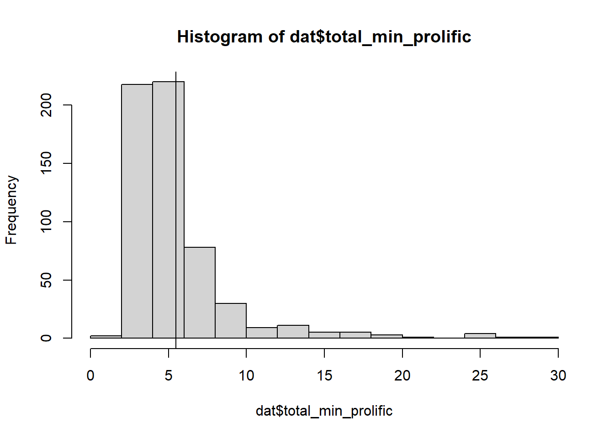
To describe conditions:
table(dat$framingCondition, dat$whichItemsFirst)
bioinspired sustainable
bioinspired 194 0
neutral 96 101
sustainable 0 1975.1 Check for differences between conditions
## -----------------------------
## Descriptive statistics
## -----------------------------
# Age
mean(dat$sociodemo_age, na.rm = TRUE)[1] 45.78061sd(dat$sociodemo_age, na.rm = TRUE)[1] 13.46006summary(dat$sociodemo_age) # includes median Min. 1st Qu. Median Mean 3rd Qu. Max.
18.00 34.00 45.00 45.78 56.00 83.00 # Gender counts + proportions
table(dat$sociodemo_gender)
female male
265 323 prop.table(table(dat$sociodemo_gender))
female male
0.4506803 0.5493197 # Prior experience counts + proportions
table(dat$sociodemo_priorExperience)
new not_sure somewhat_similar very_similar
555 10 17 6 prop.table(table(dat$sociodemo_priorExperience))
new not_sure somewhat_similar very_similar
0.94387755 0.01700680 0.02891156 0.01020408 ## -----------------------------
## Check for differences between framing conditions
## -----------------------------
# 1. Age differences across conditions (ANOVA)
anova_age <- aov(sociodemo_age ~ framingCondition, data = dat)
summary(anova_age) Df Sum Sq Mean Sq F value Pr(>F)
framingCondition 2 210 105.0 0.579 0.561
Residuals 585 106139 181.4 # Also check assumptions
shapiro.test(residuals(anova_age))
Shapiro-Wilk normality test
data: residuals(anova_age)
W = 0.98035, p-value = 4.175e-07car::leveneTest(sociodemo_age ~ framingCondition, data = dat) # requires car packageLevene's Test for Homogeneity of Variance (center = median)
Df F value Pr(>F)
group 2 1.0231 0.3601
585 # 2. Gender differences across conditions (Chi-square)
gender_table <- table(dat$framingCondition, dat$sociodemo_gender)
chisq.test(gender_table)
Pearson's Chi-squared test
data: gender_table
X-squared = 1.1732, df = 2, p-value = 0.5562# 3. Prior experience differences across conditions (Chi-square)
experience_table <- table(dat$framingCondition, dat$sociodemo_priorExperience)
chisq.test(experience_table)Warning in chisq.test(experience_table): Chi-Quadrat-Approximation kann
inkorrekt sein
Pearson's Chi-squared test
data: experience_table
X-squared = 10.551, df = 6, p-value = 0.10335.2 remove participants with insufficient effort responding (IER)
insufficient effort responding: respondents provide careless or random responses to survey items
5.2.1 IER: set up dataset
dat_IER <- data.frame(PROLIFIC_PID = dat$PROLIFIC_PID)
#### slow persons total duration
dat_IER$slowTD <- 0
out <- boxplot.stats(dat$total_min_prolific)$out
out_ind <- which(dat$total_min_prolific %in% c(out))
dat_IER$slowTD[dat_IER$PROLIFIC_PID %in% dat$PROLIFIC_PID[out_ind]] <- 1
#### careless respondents based on
# > intra-individual response variability
# > zero SD (all answers equal)
# > Mahalanobis distance (multivariate outliers)
# > compute SD over rows
rowVars <- function(x, na.rm=FALSE) {
# Vectorised version of variance filter
rowSums((x - rowMeans(x, na.rm=na.rm))^2, na.rm=na.rm) / (ncol(x) - 1)
}
scales_regEX <- c("^EcologicalDimension",
"Bioinspiration.*PN",
"Bioinspiration.*VRtN",
"Bioinspiration.*IPI")
mat_IIRV <- matrix(data = 0, nrow = nrow(dat), ncol = length(scales_regEX)+1)
mat_IIRV[,1] <- dat$PROLIFIC_PID
mat_zero <- matrix(data = 0, nrow = nrow(dat), ncol = length(scales_regEX)+1)
mat_zero[,1] <- dat$PROLIFIC_PID
mat_MD <- matrix(data = 0, nrow = nrow(dat), ncol = length(scales_regEX)+1)
mat_MD[,1] <- dat$PROLIFIC_PID
h = 2
for(e in scales_regEX){
tmp <- dat[, str_subset(string = colnames(dat), pattern = e)]
tmp <- tmp[, str_subset(string = colnames(tmp), pattern = "^mean_", negate = TRUE)]
## by intra-individual response variability
tmp_SD <- sqrt(rowVars(tmp))
out <- boxplot.stats(tmp_SD)$out
mat_IIRV[,h][mat_IIRV[,1] %in% dat$PROLIFIC_PID[tmp_SD %in% out]] <- 1
## zero SD (all answers equal)
mat_zero[,h][mat_zero[,1] %in% dat$PROLIFIC_PID[tmp_SD == 0]] <- 1
## by Mahalanobis distance (multivariate outliers)
tmp$mahal <- mahalanobis(tmp, colMeans(tmp), cov(tmp))
tmp$p_mahal <- pchisq(tmp$mahal, df=ncol(tmp)-2, lower.tail=FALSE)
mat_MD[,h][mat_MD[,1] %in% dat$PROLIFIC_PID[tmp$p_mahal %in% tmp$p_mahal[tmp$p_mahal < .001]]] <- 1
h = h + 1
}
labels <- str_replace_all(string = scales_regEX, pattern = "\\W+", replacement = "")
dat_IIRV <- as.data.frame(mat_IIRV)
colnames(dat_IIRV) <- c("PROLIFIC_PID",
labels)
dat_zero <- as.data.frame(mat_zero)
colnames(dat_zero) <- c("PROLIFIC_PID",
labels)
dat_MD <- as.data.frame(mat_MD)
colnames(dat_MD) <- c("PROLIFIC_PID",
labels)
dat_IIRV[,labels] <- lapply(dat_IIRV[,labels], as.numeric)
dat_zero[,labels] <- lapply(dat_zero[,labels], as.numeric)
dat_MD[,labels] <- lapply(dat_MD[,labels], as.numeric)
## ADD by intra-individual response variability
table(rowSums(dat_IIRV[,labels]))
0 1 2 3
418 156 13 1 tmp <- rowSums(dat_IIRV[,labels]) >= 3
dat_IER$IIRV <- 0
dat_IER$IIRV[dat_IER$PROLIFIC_PID %in% dat_IIRV$PROLIFIC_PID[tmp]] <- 1
## ADD zero SD (all answers equal)
table(rowSums(dat_zero[,labels]))
0 1 2 3 4
231 223 96 32 6 tmp <- rowSums(dat_zero[,labels]) >= 3
dat_IER$zero <- 0
dat_IER$zero[dat_IER$PROLIFIC_PID %in% dat_zero$PROLIFIC_PID[tmp]] <- 1
## ADD by Mahalanobis distance (multivariate outliers)
table(rowSums(dat_MD[,labels]))
0 1 2
545 42 1 tmp <- rowSums(dat_MD[,labels]) >= 2
dat_IER$MD <- 0
dat_IER$MD[dat_IER$PROLIFIC_PID %in% dat_MD$PROLIFIC_PID[tmp]] <- 15.2.2 IER: investigate
sum(rowSums(dat_IER[,2:ncol(dat_IER)]) >= 2)[1] 6dat_IER[rowSums(dat_IER[,2:ncol(dat_IER)]) >= 2,] PROLIFIC_PID slowTD IIRV zero MD
77 5bc879d3836d560001fc421a 1 0 1 0
166 66f0765bb7f6c2ae6ef721ee 1 0 1 0
199 6740efc378e727e6c9f43a97 1 0 1 0
277 599614af004c4f0001cc8642 1 0 1 0
557 645df5da6a7ba0101a3a2a95 1 0 1 0
581 5da09f733c3367001a72dec6 1 0 1 0## flag to delete
tmp_IDs <- dat_IER$PROLIFIC_PID[rowSums(dat_IER[,2:ncol(dat_IER)]) >= 2]
dat$flagDelete <- 0
dat$flagDelete[dat$PROLIFIC_PID %in% tmp_IDs] <- 1
dat[dat$flagDelete == 1, str_subset(string = colnames(dat), pattern = "^EcologicalDimension")] EcologicalDimension-1 EcologicalDimension-4 EcologicalDimension-2
77 6 6 5
166 6 6 6
200 7 7 7
278 4 4 4
567 6 7 7
592 5 5 5
EcologicalDimension-3
77 6
166 6
200 7
278 4
567 6
592 5 dat[dat$flagDelete == 1, str_subset(string = colnames(dat), pattern = "^Bioinspiration.")] Bioinspiration-PN2r Bioinspiration-PN1 Bioinspiration-IPI4
77 2 2 2
166 3 4 4
200 5 5 5
278 3 3 3
567 5 5 5
592 3 4 4
Bioinspiration-VRtN4r Bioinspiration-VRtN2 Bioinspiration-IPI1
77 2 2 2
166 4 4 4
200 5 5 5
278 3 3 4
567 5 5 5
592 4 4 4
Bioinspiration-VRtN1 Bioinspiration-IPI3 Bioinspiration-VRtN3
77 2 2 2
166 4 4 4
200 5 5 5
278 3 4 3
567 5 5 5
592 4 4 4
Bioinspiration-PN3 Bioinspiration-IPI2r Bioinspiration-PN4
77 2 2 2
166 4 4 4
200 5 5 5
278 3 4 3
567 5 5 5
592 4 4 4after visual inspection no removal of participants
6 Evaluation Scales
6.1 Overall EFA
Promax rotation, factoring method minimum residual, if scale is a likert scale less or equal than 7 answering options the EFA or parallel analysis is computed over a polychoric correlation to account for non-normality of data (see in detail R-Code “helperFunctions”)
#### Overall EFA
regExOverall <- "^Bioinspiration|^EcologicalDimension"
psych::cor.plot(r = cor(dat[, str_detect(string = colnames(dat),
pattern = regExOverall)]
, use = "pairwise.complete.obs"),
upper = FALSE, xlas = 2, main = "Overall")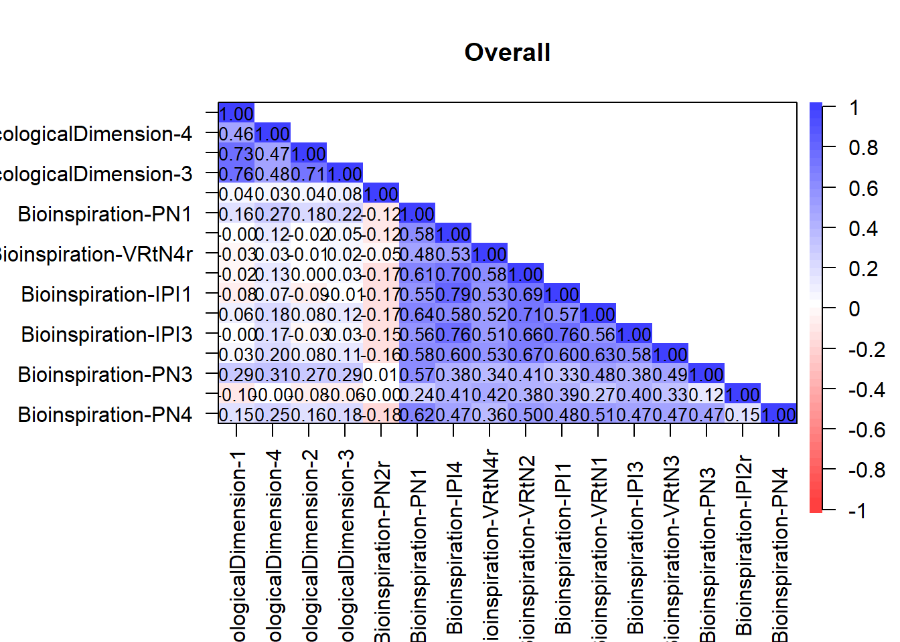
#> parallel analysis
tmp_parallelAnalysis <- dimensionalityTest(label = "Overall",
regEx = regExOverall, dataset = dat)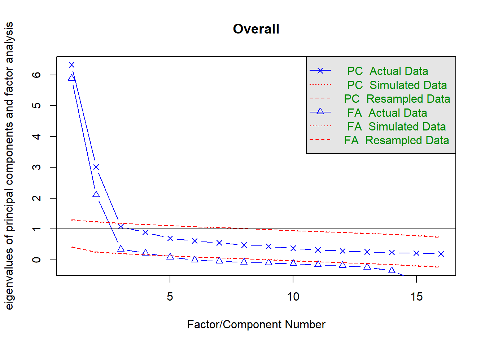
Parallel analysis suggests that the number of factors = 4 and the number of components = 2
Overall
Number of components: 2 #> EFA (# of factors=2)
tmp_EFA <- explorativeFactorAnalysis(label = "Overall",
regEx = regExOverall,
dataset = dat, nfac = 2)
tmp_EFA[[1]]Factor Analysis using method = minres
Call: fa(r = tmp_dat, nfactors = nfac, rotate = "promax", cor = "cor")
Standardized loadings (pattern matrix) based upon correlation matrix
MR1 MR2 h2 u2 com
EcologicalDimension-1 -0.14 0.87 0.740 0.26 1.0
EcologicalDimension-4 0.09 0.57 0.348 0.65 1.1
EcologicalDimension-2 -0.12 0.84 0.683 0.32 1.0
EcologicalDimension-3 -0.06 0.85 0.712 0.29 1.0
Bioinspiration-PN2r -0.19 0.07 0.036 0.96 1.3
Bioinspiration-PN1 0.71 0.23 0.617 0.38 1.2
Bioinspiration-IPI4 0.84 -0.05 0.697 0.30 1.0
Bioinspiration-VRtN4r 0.67 -0.05 0.440 0.56 1.0
Bioinspiration-VRtN2 0.85 -0.04 0.720 0.28 1.0
Bioinspiration-IPI1 0.85 -0.13 0.703 0.30 1.0
Bioinspiration-VRtN1 0.75 0.09 0.597 0.40 1.0
Bioinspiration-IPI3 0.81 -0.04 0.652 0.35 1.0
Bioinspiration-VRtN3 0.76 0.07 0.594 0.41 1.0
Bioinspiration-PN3 0.47 0.36 0.407 0.59 1.9
Bioinspiration-IPI2r 0.45 -0.15 0.207 0.79 1.2
Bioinspiration-PN4 0.59 0.21 0.427 0.57 1.3
MR1 MR2
SS loadings 5.77 2.81
Proportion Var 0.36 0.18
Cumulative Var 0.36 0.54
Proportion Explained 0.67 0.33
Cumulative Proportion 0.67 1.00
With factor correlations of
MR1 MR2
MR1 1.00 0.16
MR2 0.16 1.00
Mean item complexity = 1.1
Test of the hypothesis that 2 factors are sufficient.
df null model = 120 with the objective function = 9.39 with Chi Square = 5453.46
df of the model are 89 and the objective function was 0.82
The root mean square of the residuals (RMSR) is 0.04
The df corrected root mean square of the residuals is 0.05
The harmonic n.obs is 588 with the empirical chi square 230.27 with prob < 1.8e-14
The total n.obs was 588 with Likelihood Chi Square = 472.41 with prob < 1.4e-53
Tucker Lewis Index of factoring reliability = 0.903
RMSEA index = 0.086 and the 90 % confidence intervals are 0.078 0.093
BIC = -95.12
Fit based upon off diagonal values = 0.99
Measures of factor score adequacy
MR1 MR2
Correlation of (regression) scores with factors 0.97 0.95
Multiple R square of scores with factors 0.94 0.90
Minimum correlation of possible factor scores 0.88 0.79two factor structure, within bioinspiried dimensions no strong differences in overall answering patterns; 1 items is dysfunctional (negative correlated)
6.1.1 EFA for “Bioinspiration Items”
#### Overall EFA
regExOverall <- "^Bioinspiration"
psych::cor.plot(r = cor(dat[, str_detect(string = colnames(dat),
pattern = regExOverall)]
, use = "pairwise.complete.obs"),
upper = FALSE, xlas = 2, main = "Overall")#> parallel analysis
tmp_parallelAnalysis <- dimensionalityTest(label = "Overall",
regEx = regExOverall, dataset = dat)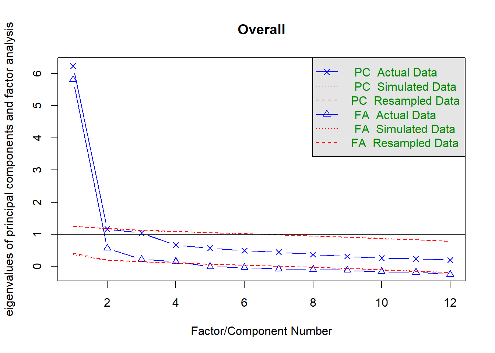
Parallel analysis suggests that the number of factors = 4 and the number of components = 1
Overall
Number of components: 1 #> EFA (# of factors=5)
tmp_EFA <- explorativeFactorAnalysis(label = "Overall",
regEx = regExOverall,
dataset = dat, nfac = 2)Warning in fa.stats(r = r, f = f, phi = phi, n.obs = n.obs, np.obs = np.obs, :
The estimated weights for the factor scores are probably incorrect. Try a
different factor score estimation method.tmp_EFA[[1]]Factor Analysis using method = minres
Call: fa(r = tmp_dat, nfactors = nfac, rotate = "promax", cor = "cor")
Standardized loadings (pattern matrix) based upon correlation matrix
MR1 MR2 h2 u2 com
Bioinspiration-PN2r -0.10 -0.09 0.03 0.97 2.0
Bioinspiration-PN1 0.02 0.83 0.71 0.29 1.0
Bioinspiration-IPI4 0.81 0.08 0.75 0.25 1.0
Bioinspiration-VRtN4r 0.52 0.18 0.44 0.56 1.2
Bioinspiration-VRtN2 0.58 0.32 0.71 0.29 1.6
Bioinspiration-IPI1 0.85 0.03 0.75 0.25 1.0
Bioinspiration-VRtN1 0.25 0.59 0.62 0.38 1.4
Bioinspiration-IPI3 0.76 0.09 0.70 0.30 1.0
Bioinspiration-VRtN3 0.37 0.46 0.59 0.41 1.9
Bioinspiration-PN3 -0.20 0.82 0.47 0.53 1.1
Bioinspiration-IPI2r 0.65 -0.21 0.27 0.73 1.2
Bioinspiration-PN4 -0.01 0.71 0.49 0.51 1.0
MR1 MR2
SS loadings 3.58 2.96
Proportion Var 0.30 0.25
Cumulative Var 0.30 0.55
Proportion Explained 0.55 0.45
Cumulative Proportion 0.55 1.00
With factor correlations of
MR1 MR2
MR1 1.00 0.72
MR2 0.72 1.00
Mean item complexity = 1.3
Test of the hypothesis that 2 factors are sufficient.
df null model = 66 with the objective function = 7 with Chi Square = 4076.4
df of the model are 43 and the objective function was 0.34
The root mean square of the residuals (RMSR) is 0.04
The df corrected root mean square of the residuals is 0.04
The harmonic n.obs is 588 with the empirical chi square 96.58 with prob < 5.4e-06
The total n.obs was 588 with Likelihood Chi Square = 197.43 with prob < 1.2e-21
Tucker Lewis Index of factoring reliability = 0.941
RMSEA index = 0.078 and the 90 % confidence intervals are 0.067 0.089
BIC = -76.77
Fit based upon off diagonal values = 0.99
Measures of factor score adequacy
MR1 MR2
Correlation of (regression) scores with factors 0.96 0.94
Multiple R square of scores with factors 0.92 0.89
Minimum correlation of possible factor scores 0.83 0.776.2 Descriptives, correlation plot, EFA, CFA for “Ecological Sustainability Scale (PES)”
Applied a self-written function for example to check the reliability and amount of explained variance for the first factor:
regEx <- "^EcologicalDimension"
nameVariable <- "Ecology"
sum(str_detect(string = colnames(dat), pattern = regEx))[1] 4tmp_dat <- na.omit(dat[,str_detect(string = colnames(dat), pattern = regEx)])
tmp <- CFAstats(dataset = tmp_dat, regularExp = regEx, labelLatent = str_remove(string = nameVariable, pattern = "mean_"),
showPlots = TRUE,
computeEFA = TRUE,
computeCFA = TRUE,
computeCFAMplus = FALSE)
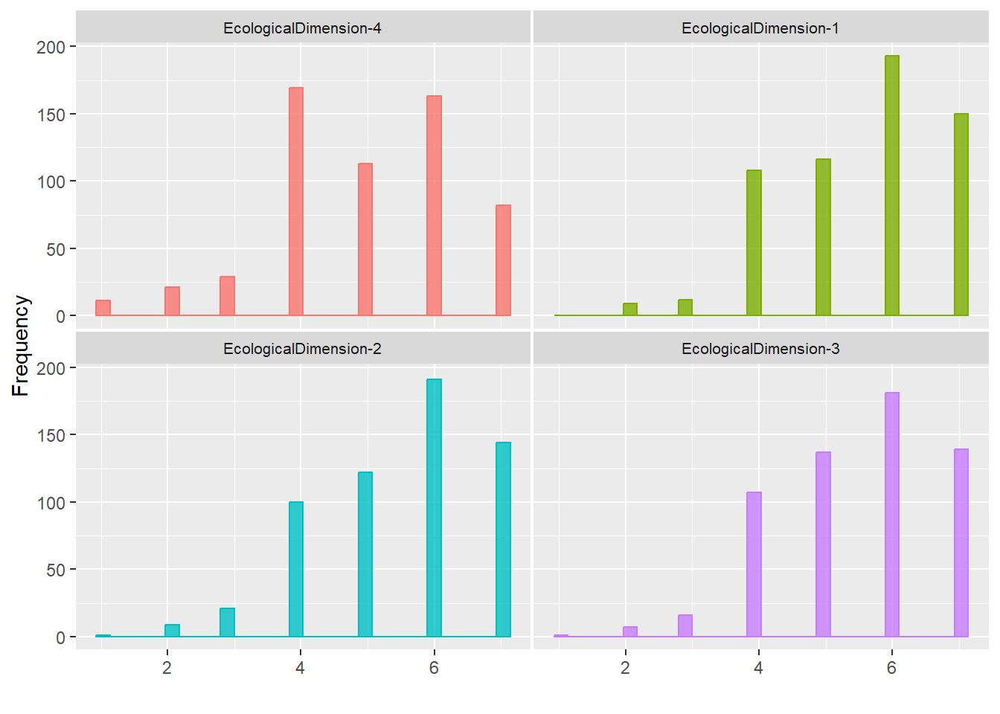
descriptive statistics:
Mean SD Median CoeffofVariation Minimum Maximun
EcologicalDimension-1 5.57 1.20 6 0.21 2 7
EcologicalDimension-4 4.99 1.39 5 0.28 1 7
EcologicalDimension-2 5.52 1.23 6 0.22 1 7
EcologicalDimension-3 5.50 1.20 6 0.22 1 7
Lower Quantile Upper Quantile Skewness Kurtosis(-3)
EcologicalDimension-1 2 7 -0.59 -0.27
EcologicalDimension-4 1 7 -0.51 -0.03
EcologicalDimension-2 1 7 -0.64 -0.10
EcologicalDimension-3 1 7 -0.53 -0.20
KS-Test
EcologicalDimension-1 0
EcologicalDimension-4 0
EcologicalDimension-2 0
EcologicalDimension-3 0
variables under investigation: EcologicalDimension1 EcologicalDimension4 EcologicalDimension2 EcologicalDimension3
Cronbachs Alpha: 0.86 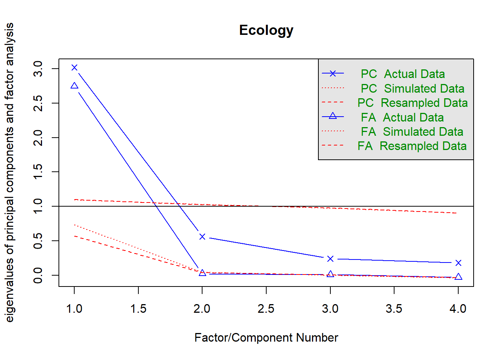
Parallel analysis suggests that the number of factors = 1 and the number of components = 1
Ecology
Number of components: 1
EFA factor loadings (1 factor solution):
Loadings:
MR1
EcologicalDimension1 0.903
EcologicalDimension4 0.612
EcologicalDimension2 0.870
EcologicalDimension3 0.894
MR1
SS loadings 2.745
Proportion Var 0.686
CFA summary and fit statistics:
lavaan 0.6-19 ended normally after 18 iterations
Estimator ML
Optimization method NLMINB
Number of model parameters 8
Number of observations 588
Model Test User Model:
Standard Scaled
Test Statistic 3.283 1.953
Degrees of freedom 2 2
P-value (Chi-square) 0.194 0.377
Scaling correction factor 1.681
Yuan-Bentler correction (Mplus variant)
Model Test Baseline Model:
Test statistic 1219.012 556.578
Degrees of freedom 6 6
P-value 0.000 0.000
Scaling correction factor 2.190
User Model versus Baseline Model:
Comparative Fit Index (CFI) 0.999 1.000
Tucker-Lewis Index (TLI) 0.997 1.000
Robust Comparative Fit Index (CFI) 1.000
Robust Tucker-Lewis Index (TLI) 1.000
Loglikelihood and Information Criteria:
Loglikelihood user model (H0) -3255.281 -3255.281
Scaling correction factor 1.685
for the MLR correction
Loglikelihood unrestricted model (H1) -3253.640 -3253.640
Scaling correction factor 1.684
for the MLR correction
Akaike (AIC) 6526.563 6526.563
Bayesian (BIC) 6561.576 6561.576
Sample-size adjusted Bayesian (SABIC) 6536.179 6536.179
Root Mean Square Error of Approximation:
RMSEA 0.033 0.000
90 Percent confidence interval - lower 0.000 0.000
90 Percent confidence interval - upper 0.095 0.066
P-value H_0: RMSEA <= 0.050 0.581 0.847
P-value H_0: RMSEA >= 0.080 0.122 0.013
Robust RMSEA 0.000
90 Percent confidence interval - lower 0.000
90 Percent confidence interval - upper 0.105
P-value H_0: Robust RMSEA <= 0.050 0.634
P-value H_0: Robust RMSEA >= 0.080 0.152
Standardized Root Mean Square Residual:
SRMR 0.009 0.009
Parameter Estimates:
Standard errors Sandwich
Information bread Observed
Observed information based on Hessian
Latent Variables:
Estimate Std.Err z-value P(>|z|) Std.lv Std.all
Ecology =~
EcologclDmnsn1 1.000 1.052 0.880
EcologclDmnsn4 0.725 0.054 13.423 0.000 0.763 0.548
EcologclDmnsn2 0.968 0.045 21.747 0.000 1.018 0.828
EcologclDmnsn3 0.979 0.040 24.442 0.000 1.030 0.862
Variances:
Estimate Std.Err z-value P(>|z|) Std.lv Std.all
.EcologclDmnsn1 0.322 0.047 6.916 0.000 0.322 0.225
.EcologclDmnsn4 1.358 0.134 10.155 0.000 1.358 0.700
.EcologclDmnsn2 0.475 0.049 9.646 0.000 0.475 0.314
.EcologclDmnsn3 0.367 0.059 6.213 0.000 0.367 0.257
Ecology 1.107 0.088 12.617 0.000 1.000 1.000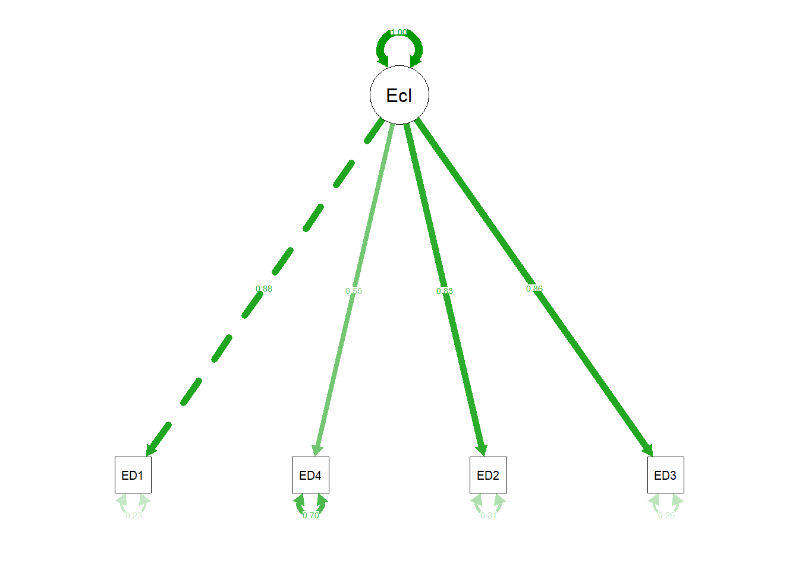
CFA first 6 Modification Indices:
lhs op rhs mi epc sepc.lv sepc.all
15 EcologicalDimension2 ~~ EcologicalDimension3 3.111 -0.089 -0.089 -0.213
10 EcologicalDimension1 ~~ EcologicalDimension4 3.111 -0.068 -0.068 -0.103
12 EcologicalDimension1 ~~ EcologicalDimension3 1.271 0.064 0.064 0.186
13 EcologicalDimension4 ~~ EcologicalDimension2 1.271 0.046 0.046 0.057
11 EcologicalDimension1 ~~ EcologicalDimension2 0.559 0.039 0.039 0.101
14 EcologicalDimension4 ~~ EcologicalDimension3 0.559 0.029 0.029 0.041
sepc.nox
15 -0.213
10 -0.103
12 0.186
13 0.057
11 0.101
14 0.041des_tab <- tmp$desTable %>%
as.data.frame() %>%
select(Mean, SD, Skewness, `Kurtosis(-3)`, `KS-Test`)
stargazer(
des_tab,
summary = FALSE,
rownames = TRUE,
title = "Descriptive Statistics for Ecological Items",
label = "tab:ecology_desc",
digits = 2,
table.placement = "ht!",
font.size = "small"
)
% Table created by stargazer v.5.2.3 by Marek Hlavac, Social Policy Institute. E-mail: marek.hlavac at gmail.com
% Date and time: Do, Dez 04, 2025 - 09:12:49
\begin{table}[ht!] \centering
\caption{Descriptive Statistics for Ecological Items}
\label{tab:ecology_desc}
\small
\begin{tabular}{@{\extracolsep{5pt}} cccccc}
\\[-1.8ex]\hline
\hline \\[-1.8ex]
& Mean & SD & Skewness & Kurtosis(-3) & KS-Test \\
\hline \\[-1.8ex]
EcologicalDimension-1 & $5.57$ & $1.20$ & $$-$0.59$ & $$-$0.27$ & $0$ \\
EcologicalDimension-4 & $4.99$ & $1.39$ & $$-$0.51$ & $$-$0.03$ & $0$ \\
EcologicalDimension-2 & $5.52$ & $1.23$ & $$-$0.64$ & $$-$0.10$ & $0$ \\
EcologicalDimension-3 & $5.50$ & $1.20$ & $$-$0.53$ & $$-$0.20$ & $0$ \\
\hline \\[-1.8ex]
\end{tabular}
\end{table} omega_results <- psych::omega(tmp_dat, nfactors = 1) # or more if needed
omega_resultsOmega
Call: omegah(m = m, nfactors = nfactors, fm = fm, key = key, flip = flip,
digits = digits, title = title, sl = sl, labels = labels,
plot = plot, n.obs = n.obs, rotate = rotate, Phi = Phi, option = option,
covar = covar)
Alpha: 0.86
G.6: 0.84
Omega Hierarchical: 0.87
Omega H asymptotic: 1
Omega Total 0.87
Schmid Leiman Factor loadings greater than 0.2
g F1* h2 h2 u2 p2 com
EcologicalDimension-1 0.87 0.76 0.76 0.24 1 1
EcologicalDimension-4 0.55 0.30 0.30 0.70 1 1
EcologicalDimension-2 0.83 0.69 0.69 0.31 1 1
EcologicalDimension-3 0.86 0.75 0.75 0.25 1 1
With Sums of squares of:
g F1* h2
2.5 0.0 1.7
general/max 1.46 max/min = Inf
mean percent general = 1 with sd = 0 and cv of 0
Explained Common Variance of the general factor = 1
The degrees of freedom are 2 and the fit is 0.01
The number of observations was 588 with Chi Square = 3.67 with prob < 0.16
The root mean square of the residuals is 0.01
The df corrected root mean square of the residuals is 0.02
RMSEA index = 0.038 and the 90 % confidence intervals are 0 0.098
BIC = -9.09
Compare this with the adequacy of just a general factor and no group factors
The degrees of freedom for just the general factor are 2 and the fit is 0.01
The number of observations was 588 with Chi Square = 3.67 with prob < 0.16
The root mean square of the residuals is 0.01
The df corrected root mean square of the residuals is 0.02
RMSEA index = 0.038 and the 90 % confidence intervals are 0 0.098
BIC = -9.09
Measures of factor score adequacy
g F1*
Correlation of scores with factors 0.95 0
Multiple R square of scores with factors 0.90 0
Minimum correlation of factor score estimates 0.80 -1
Total, General and Subset omega for each subset
g F1*
Omega total for total scores and subscales 0.87 0.87
Omega general for total scores and subscales 0.87 0.87
Omega group for total scores and subscales 0.00 0.00omega_results$omega.tot # Total Omega[1] 0.8668467omega_results$omega.h # Hierarchical OmegaNULLomega_results$omega.g # Group Omega (if multiple factors) total general group
g 0.8668467 0.8668025 0
F1* 0.8668025 0.8668025 06.3 Descriptives, correlation plot, EFA, CFA for “Perceived Bio-Inspiration Scale (PBS)”
6.3.1 overall
regEx <- "^Bioinspiration"
nameVariable <- "Bioinspiration"
sum(str_detect(string = colnames(dat), pattern = regEx))[1] 12tmp_dat <- na.omit(dat[,str_detect(string = colnames(dat), pattern = regEx)])
tmp <- CFAstats(dataset = tmp_dat, regularExp = regEx, labelLatent = str_remove(string = nameVariable, pattern = "mean_"),
showPlots = TRUE,
computeEFA = TRUE,
computeCFA = TRUE,
computeCFAMplus = FALSE)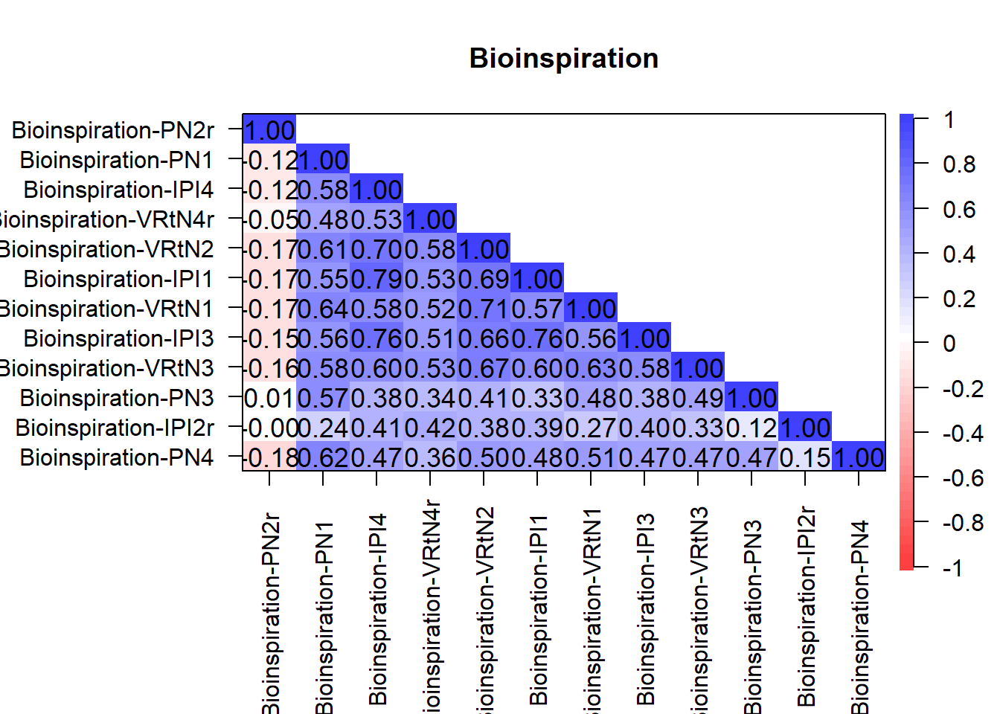

descriptive statistics:
Mean SD Median CoeffofVariation Minimum Maximun
Bioinspiration-PN2r 3.09 1.08 3 0.35 1 5
Bioinspiration-PN1 3.54 0.97 4 0.27 1 5
Bioinspiration-IPI4 3.78 0.97 4 0.26 1 5
Bioinspiration-VRtN4r 3.26 1.10 3 0.34 1 5
Bioinspiration-VRtN2 3.48 1.10 4 0.32 1 5
Bioinspiration-IPI1 3.79 0.99 4 0.26 1 5
Bioinspiration-VRtN1 3.44 1.04 4 0.30 1 5
Bioinspiration-IPI3 3.93 0.94 4 0.24 1 5
Bioinspiration-VRtN3 3.45 0.98 4 0.28 1 5
Bioinspiration-PN3 3.55 0.92 4 0.26 1 5
Bioinspiration-IPI2r 3.40 1.06 4 0.31 1 5
Bioinspiration-PN4 3.15 1.06 3 0.34 1 5
Lower Quantile Upper Quantile Skewness Kurtosis(-3)
Bioinspiration-PN2r 1 5 0.02 -0.87
Bioinspiration-PN1 1 5 -0.60 -0.10
Bioinspiration-IPI4 1 5 -0.72 0.10
Bioinspiration-VRtN4r 1 5 -0.27 -0.85
Bioinspiration-VRtN2 1 5 -0.64 -0.40
Bioinspiration-IPI1 1 5 -0.72 0.02
Bioinspiration-VRtN1 1 5 -0.56 -0.35
Bioinspiration-IPI3 1 5 -0.84 0.35
Bioinspiration-VRtN3 1 5 -0.47 -0.36
Bioinspiration-PN3 1 5 -0.38 -0.31
Bioinspiration-IPI2r 1 5 -0.32 -0.73
Bioinspiration-PN4 1 5 -0.23 -0.87
KS-Test
Bioinspiration-PN2r 0
Bioinspiration-PN1 0
Bioinspiration-IPI4 0
Bioinspiration-VRtN4r 0
Bioinspiration-VRtN2 0
Bioinspiration-IPI1 0
Bioinspiration-VRtN1 0
Bioinspiration-IPI3 0
Bioinspiration-VRtN3 0
Bioinspiration-PN3 0
Bioinspiration-IPI2r 0
Bioinspiration-PN4 0
variables under investigation: BioinspirationPN2r BioinspirationPN1 BioinspirationIPI4 BioinspirationVRtN4r BioinspirationVRtN2 BioinspirationIPI1 BioinspirationVRtN1 BioinspirationIPI3 BioinspirationVRtN3 BioinspirationPN3 BioinspirationIPI2r BioinspirationPN4 Some items ( Bioinspiration-PN2r ) were negatively correlated with the first principal component and
probably should be reversed.
To do this, run the function again with the 'check.keys=TRUE' optionCronbachs Alpha: 0.89 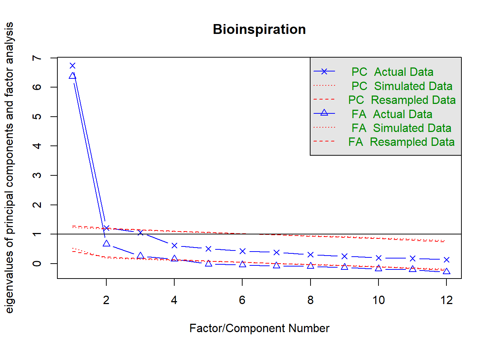
Parallel analysis suggests that the number of factors = 4 and the number of components = 2
Bioinspiration
Number of components: 2
EFA factor loadings (1 factor solution):
Loadings:
MR1
BioinspirationPN2r -0.164
BioinspirationPN1 0.790
BioinspirationIPI4 0.865
BioinspirationVRtN4r 0.689
BioinspirationVRtN2 0.882
BioinspirationIPI1 0.841
BioinspirationVRtN1 0.812
BioinspirationIPI3 0.839
BioinspirationVRtN3 0.814
BioinspirationPN3 0.576
BioinspirationIPI2r 0.459
BioinspirationPN4 0.665
MR1
SS loadings 6.370
Proportion Var 0.531
CFA summary and fit statistics:
lavaan 0.6-19 ended normally after 54 iterations
Estimator ML
Optimization method NLMINB
Number of model parameters 24
Number of observations 588
Model Test User Model:
Standard Scaled
Test Statistic 518.383 407.645
Degrees of freedom 54 54
P-value (Chi-square) 0.000 0.000
Scaling correction factor 1.272
Yuan-Bentler correction (Mplus variant)
Model Test Baseline Model:
Test statistic 4117.250 3089.068
Degrees of freedom 66 66
P-value 0.000 0.000
Scaling correction factor 1.333
User Model versus Baseline Model:
Comparative Fit Index (CFI) 0.885 0.883
Tucker-Lewis Index (TLI) 0.860 0.857
Robust Comparative Fit Index (CFI) 0.888
Robust Tucker-Lewis Index (TLI) 0.864
Loglikelihood and Information Criteria:
Loglikelihood user model (H0) -8318.343 -8318.343
Scaling correction factor 1.213
for the MLR correction
Loglikelihood unrestricted model (H1) -8059.151 -8059.151
Scaling correction factor 1.254
for the MLR correction
Akaike (AIC) 16684.686 16684.686
Bayesian (BIC) 16789.727 16789.727
Sample-size adjusted Bayesian (SABIC) 16713.535 16713.535
Root Mean Square Error of Approximation:
RMSEA 0.121 0.106
90 Percent confidence interval - lower 0.112 0.097
90 Percent confidence interval - upper 0.131 0.114
P-value H_0: RMSEA <= 0.050 0.000 0.000
P-value H_0: RMSEA >= 0.080 1.000 1.000
Robust RMSEA 0.119
90 Percent confidence interval - lower 0.108
90 Percent confidence interval - upper 0.130
P-value H_0: Robust RMSEA <= 0.050 0.000
P-value H_0: Robust RMSEA >= 0.080 1.000
Standardized Root Mean Square Residual:
SRMR 0.060 0.060
Parameter Estimates:
Standard errors Sandwich
Information bread Observed
Observed information based on Hessian
Latent Variables:
Estimate Std.Err z-value P(>|z|) Std.lv Std.all
Bioinspiration =~
BioinsprtnPN2r 1.000 0.194 0.180
BioinspirtnPN1 -3.680 0.986 -3.732 0.000 -0.713 -0.735
BioinsprtnIPI4 -4.222 1.139 -3.707 0.000 -0.818 -0.847
BinsprtnVRtN4r -3.735 1.051 -3.552 0.000 -0.724 -0.656
BionsprtnVRtN2 -4.763 1.276 -3.732 0.000 -0.923 -0.843
BioinsprtnIPI1 -4.271 1.137 -3.755 0.000 -0.828 -0.837
BionsprtnVRtN1 -4.056 1.086 -3.736 0.000 -0.786 -0.759
BioinsprtnIPI3 -3.963 1.068 -3.710 0.000 -0.768 -0.817
BionsprtnVRtN3 -3.846 1.038 -3.704 0.000 -0.745 -0.760
BioinspirtnPN3 -2.472 0.707 -3.494 0.000 -0.479 -0.521
BionsprtnIPI2r -2.400 0.707 -3.394 0.001 -0.465 -0.438
BioinspirtnPN4 -3.368 0.904 -3.725 0.000 -0.653 -0.614
Variances:
Estimate Std.Err z-value P(>|z|) Std.lv Std.all
.BioinsprtnPN2r 1.121 0.054 20.934 0.000 1.121 0.968
.BioinspirtnPN1 0.433 0.038 11.443 0.000 0.433 0.460
.BioinsprtnIPI4 0.265 0.026 10.009 0.000 0.265 0.283
.BinsprtnVRtN4r 0.693 0.064 10.884 0.000 0.693 0.569
.BionsprtnVRtN2 0.346 0.033 10.602 0.000 0.346 0.289
.BioinsprtnIPI1 0.293 0.028 10.277 0.000 0.293 0.299
.BionsprtnVRtN1 0.454 0.039 11.662 0.000 0.454 0.424
.BioinsprtnIPI3 0.293 0.026 11.302 0.000 0.293 0.332
.BionsprtnVRtN3 0.406 0.032 12.518 0.000 0.406 0.422
.BioinspirtnPN3 0.617 0.038 16.377 0.000 0.617 0.729
.BionsprtnIPI2r 0.912 0.057 15.927 0.000 0.912 0.808
.BioinspirtnPN4 0.704 0.044 15.988 0.000 0.704 0.623
Bioinspiration 0.038 0.021 1.829 0.067 1.000 1.000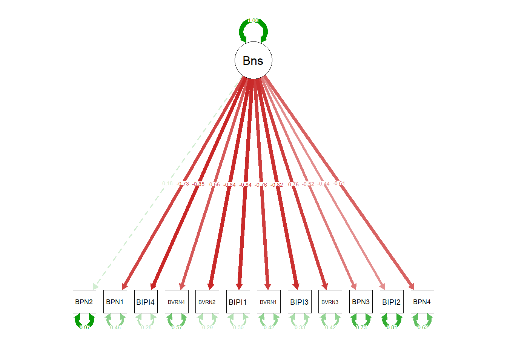
CFA first 6 Modification Indices:
lhs op rhs mi epc sepc.lv sepc.all
49 BioinspirationIPI4 ~~ BioinspirationIPI1 82.233 0.132 0.132 0.473
44 BioinspirationPN1 ~~ BioinspirationPN3 70.970 0.190 0.190 0.367
46 BioinspirationPN1 ~~ BioinspirationPN4 66.754 0.199 0.199 0.360
72 BioinspirationIPI1 ~~ BioinspirationIPI3 51.087 0.106 0.106 0.360
51 BioinspirationIPI4 ~~ BioinspirationIPI3 42.718 0.093 0.093 0.333
74 BioinspirationIPI1 ~~ BioinspirationPN3 35.663 -0.116 -0.116 -0.273
sepc.nox
49 0.473
44 0.367
46 0.360
72 0.360
51 0.333
74 -0.2736.3.2 Visual Resemblance to Nature (VRtN)
regEx <- "^Bioinspiration-VRtN"
nameVariable <- "VRtN"
sum(str_detect(string = colnames(dat), pattern = regEx))[1] 4tmp_dat <- na.omit(dat[,str_detect(string = colnames(dat), pattern = regEx)])
tmp <- CFAstats(dataset = tmp_dat, regularExp = regEx, labelLatent = str_remove(string = nameVariable, pattern = "mean_"),
showPlots = TRUE,
computeEFA = TRUE,
computeCFA = TRUE,
computeCFAMplus = FALSE)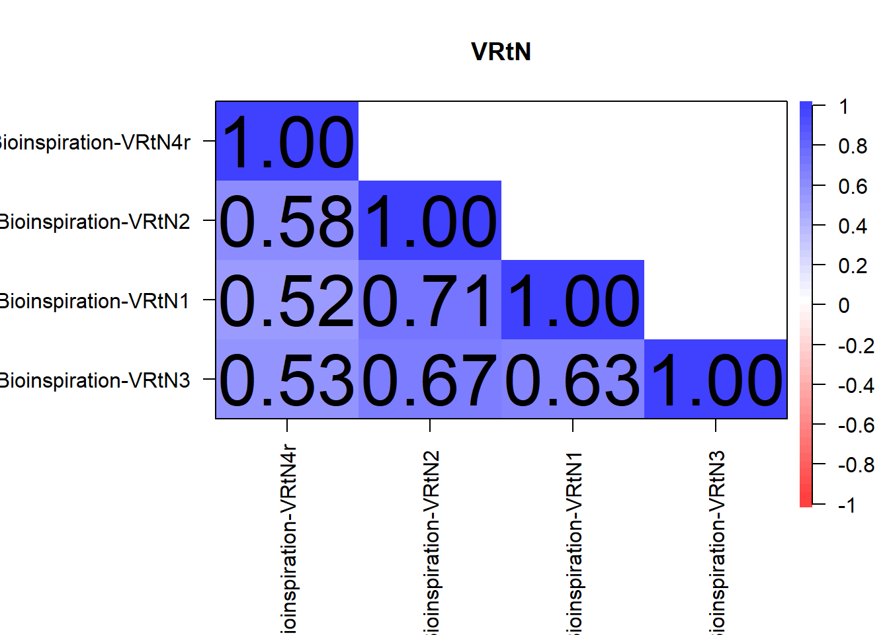
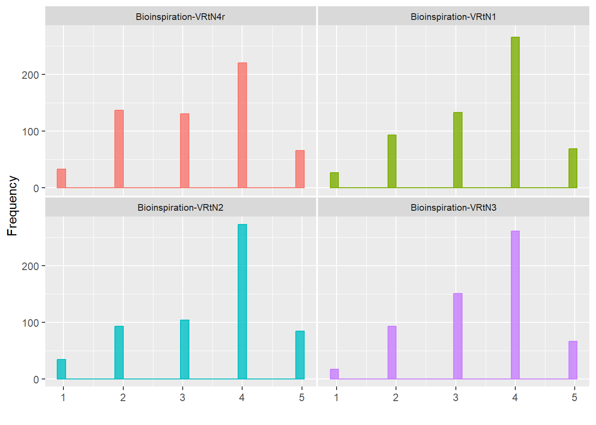
descriptive statistics:
Mean SD Median CoeffofVariation Minimum Maximun
Bioinspiration-VRtN4r 3.26 1.10 3 0.34 1 5
Bioinspiration-VRtN2 3.48 1.10 4 0.32 1 5
Bioinspiration-VRtN1 3.44 1.04 4 0.30 1 5
Bioinspiration-VRtN3 3.45 0.98 4 0.28 1 5
Lower Quantile Upper Quantile Skewness Kurtosis(-3)
Bioinspiration-VRtN4r 1 5 -0.27 -0.85
Bioinspiration-VRtN2 1 5 -0.64 -0.40
Bioinspiration-VRtN1 1 5 -0.56 -0.35
Bioinspiration-VRtN3 1 5 -0.47 -0.36
KS-Test
Bioinspiration-VRtN4r 0
Bioinspiration-VRtN2 0
Bioinspiration-VRtN1 0
Bioinspiration-VRtN3 0
variables under investigation: BioinspirationVRtN4r BioinspirationVRtN2 BioinspirationVRtN1 BioinspirationVRtN3
Cronbachs Alpha: 0.86 
Parallel analysis suggests that the number of factors = 1 and the number of components = 1
VRtN
Number of components: 1
EFA factor loadings (1 factor solution):
Loadings:
MR1
BioinspirationVRtN4r 0.690
BioinspirationVRtN2 0.907
BioinspirationVRtN1 0.843
BioinspirationVRtN3 0.830
MR1
SS loadings 2.698
Proportion Var 0.674
CFA summary and fit statistics:
lavaan 0.6-19 ended normally after 21 iterations
Estimator ML
Optimization method NLMINB
Number of model parameters 8
Number of observations 588
Model Test User Model:
Standard Scaled
Test Statistic 1.393 1.049
Degrees of freedom 2 2
P-value (Chi-square) 0.498 0.592
Scaling correction factor 1.328
Yuan-Bentler correction (Mplus variant)
Model Test Baseline Model:
Test statistic 1100.963 725.358
Degrees of freedom 6 6
P-value 0.000 0.000
Scaling correction factor 1.518
User Model versus Baseline Model:
Comparative Fit Index (CFI) 1.000 1.000
Tucker-Lewis Index (TLI) 1.002 1.004
Robust Comparative Fit Index (CFI) 1.000
Robust Tucker-Lewis Index (TLI) 1.003
Loglikelihood and Information Criteria:
Loglikelihood user model (H0) -2907.780 -2907.780
Scaling correction factor 1.184
for the MLR correction
Loglikelihood unrestricted model (H1) -2907.084 -2907.084
Scaling correction factor 1.213
for the MLR correction
Akaike (AIC) 5831.560 5831.560
Bayesian (BIC) 5866.574 5866.574
Sample-size adjusted Bayesian (SABIC) 5841.176 5841.176
Root Mean Square Error of Approximation:
RMSEA 0.000 0.000
90 Percent confidence interval - lower 0.000 0.000
90 Percent confidence interval - upper 0.073 0.058
P-value H_0: RMSEA <= 0.050 0.823 0.917
P-value H_0: RMSEA >= 0.080 0.032 0.008
Robust RMSEA 0.000
90 Percent confidence interval - lower 0.000
90 Percent confidence interval - upper 0.078
P-value H_0: Robust RMSEA <= 0.050 0.826
P-value H_0: Robust RMSEA >= 0.080 0.045
Standardized Root Mean Square Residual:
SRMR 0.007 0.007
Parameter Estimates:
Standard errors Sandwich
Information bread Observed
Observed information based on Hessian
Latent Variables:
Estimate Std.Err z-value P(>|z|) Std.lv Std.all
VRtN =~
BinsprtnVRtN4r 1.000 0.732 0.664
BionsprtnVRtN2 1.304 0.082 15.855 0.000 0.954 0.872
BionsprtnVRtN1 1.144 0.075 15.199 0.000 0.837 0.809
BionsprtnVRtN3 1.041 0.065 15.898 0.000 0.762 0.777
Variances:
Estimate Std.Err z-value P(>|z|) Std.lv Std.all
.BinsprtnVRtN4r 0.681 0.064 10.710 0.000 0.681 0.560
.BionsprtnVRtN2 0.287 0.034 8.537 0.000 0.287 0.240
.BionsprtnVRtN1 0.371 0.035 10.531 0.000 0.371 0.346
.BionsprtnVRtN3 0.381 0.034 11.187 0.000 0.381 0.396
VRtN 0.536 0.064 8.422 0.000 1.000 1.000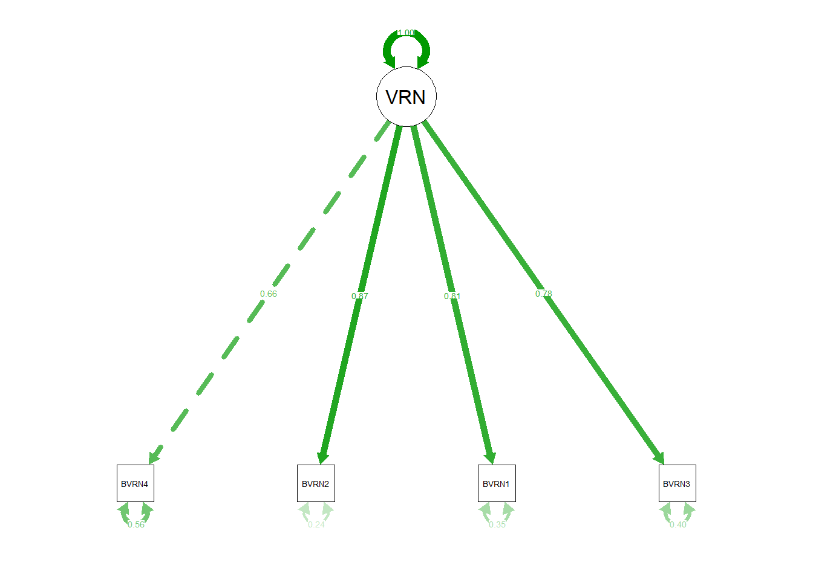
CFA first 6 Modification Indices:
lhs op rhs mi epc sepc.lv sepc.all
11 BioinspirationVRtN4r ~~ BioinspirationVRtN1 1.076 -0.030 -0.030 -0.060
14 BioinspirationVRtN2 ~~ BioinspirationVRtN3 1.076 -0.036 -0.036 -0.107
12 BioinspirationVRtN4r ~~ BioinspirationVRtN3 0.918 0.026 0.026 0.051
13 BioinspirationVRtN2 ~~ BioinspirationVRtN1 0.918 0.037 0.037 0.115
10 BioinspirationVRtN4r ~~ BioinspirationVRtN2 0.012 0.003 0.003 0.008
15 BioinspirationVRtN1 ~~ BioinspirationVRtN3 0.012 0.003 0.003 0.008
sepc.nox
11 -0.060
14 -0.107
12 0.051
13 0.115
10 0.008
15 0.008des_tab <- tmp$desTable %>%
as.data.frame() %>%
select(Mean, SD, Skewness, `Kurtosis(-3)`, `KS-Test`)
stargazer(
des_tab,
summary = FALSE,
rownames = TRUE,
title = "Descriptive Statistics for Ecological Items",
label = "tab:ecology_desc",
digits = 2,
table.placement = "ht!",
font.size = "small"
)
% Table created by stargazer v.5.2.3 by Marek Hlavac, Social Policy Institute. E-mail: marek.hlavac at gmail.com
% Date and time: Do, Dez 04, 2025 - 09:13:10
\begin{table}[ht!] \centering
\caption{Descriptive Statistics for Ecological Items}
\label{tab:ecology_desc}
\small
\begin{tabular}{@{\extracolsep{5pt}} cccccc}
\\[-1.8ex]\hline
\hline \\[-1.8ex]
& Mean & SD & Skewness & Kurtosis(-3) & KS-Test \\
\hline \\[-1.8ex]
Bioinspiration-VRtN4r & $3.26$ & $1.10$ & $$-$0.27$ & $$-$0.85$ & $0$ \\
Bioinspiration-VRtN2 & $3.48$ & $1.10$ & $$-$0.64$ & $$-$0.40$ & $0$ \\
Bioinspiration-VRtN1 & $3.44$ & $1.04$ & $$-$0.56$ & $$-$0.35$ & $0$ \\
Bioinspiration-VRtN3 & $3.45$ & $0.98$ & $$-$0.47$ & $$-$0.36$ & $0$ \\
\hline \\[-1.8ex]
\end{tabular}
\end{table} omega_results <- psych::omega(tmp_dat, nfactors = 1) # or more if needed
omega_resultsOmega
Call: omegah(m = m, nfactors = nfactors, fm = fm, key = key, flip = flip,
digits = digits, title = title, sl = sl, labels = labels,
plot = plot, n.obs = n.obs, rotate = rotate, Phi = Phi, option = option,
covar = covar)
Alpha: 0.86
G.6: 0.83
Omega Hierarchical: 0.86
Omega H asymptotic: 1
Omega Total 0.86
Schmid Leiman Factor loadings greater than 0.2
g F1* h2 h2 u2 p2 com
Bioinspiration-VRtN4r 0.66 0.44 0.44 0.56 1 1
Bioinspiration-VRtN2 0.87 0.76 0.76 0.24 1 1
Bioinspiration-VRtN1 0.80 0.65 0.65 0.35 1 1
Bioinspiration-VRtN3 0.78 0.61 0.61 0.39 1 1
With Sums of squares of:
g F1* h2
2.5 0.0 1.6
general/max 1.57 max/min = 2.815138e+16
mean percent general = 1 with sd = 0 and cv of 0
Explained Common Variance of the general factor = 1
The degrees of freedom are 2 and the fit is 0
The number of observations was 588 with Chi Square = 1.51 with prob < 0.47
The root mean square of the residuals is 0.01
The df corrected root mean square of the residuals is 0.01
RMSEA index = 0 and the 90 % confidence intervals are 0 0.075
BIC = -11.24
Compare this with the adequacy of just a general factor and no group factors
The degrees of freedom for just the general factor are 2 and the fit is 0
The number of observations was 588 with Chi Square = 1.51 with prob < 0.47
The root mean square of the residuals is 0.01
The df corrected root mean square of the residuals is 0.01
RMSEA index = 0 and the 90 % confidence intervals are 0 0.075
BIC = -11.24
Measures of factor score adequacy
g F1*
Correlation of scores with factors 0.94 0
Multiple R square of scores with factors 0.88 0
Minimum correlation of factor score estimates 0.76 -1
Total, General and Subset omega for each subset
g F1*
Omega total for total scores and subscales 0.86 0.86
Omega general for total scores and subscales 0.86 0.86
Omega group for total scores and subscales 0.00 0.00omega_results$omega.tot # Total Omega[1] 0.8633748omega_results$omega.h # Hierarchical OmegaNULLomega_results$omega.g # Group Omega (if multiple factors) total general group
g 0.8633748 0.8633632 4.918931e-18
F1* 0.8633632 0.8633632 4.918931e-186.3.3 Intentionality & Perceived Inspiration (IPI)
regEx <- "^Bioinspiration-IPI"
nameVariable <- "IPI"
sum(str_detect(string = colnames(dat), pattern = regEx))[1] 4tmp_dat <- na.omit(dat[,str_detect(string = colnames(dat), pattern = regEx)])
tmp <- CFAstats(dataset = tmp_dat, regularExp = regEx, labelLatent = str_remove(string = nameVariable, pattern = "mean_"),
showPlots = TRUE,
computeEFA = TRUE,
computeCFA = TRUE,
computeCFAMplus = FALSE)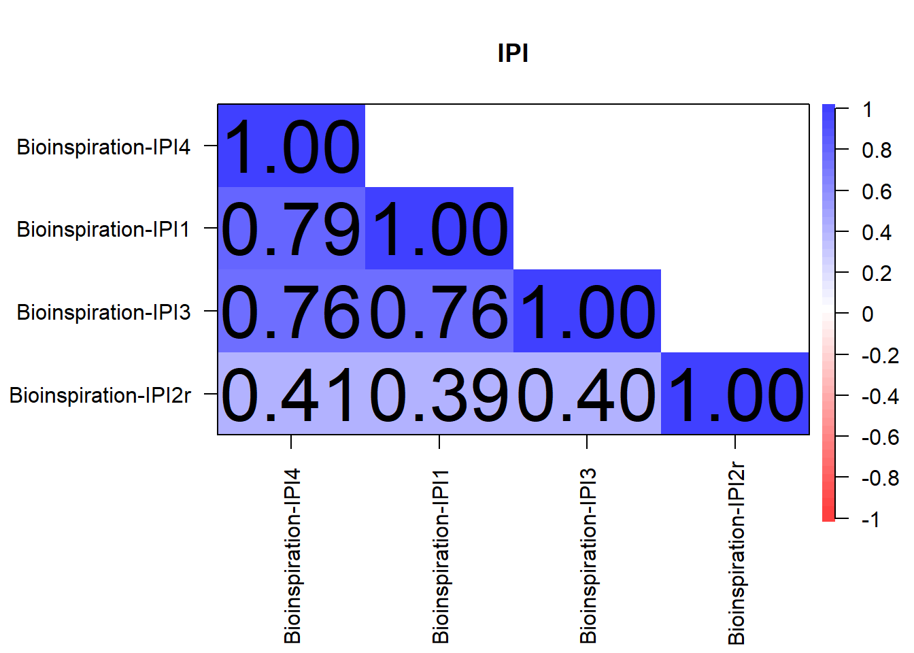
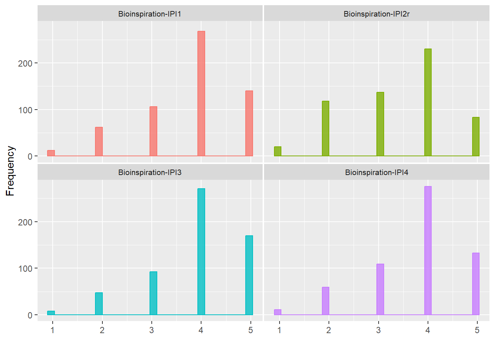
descriptive statistics:
Mean SD Median CoeffofVariation Minimum Maximun
Bioinspiration-IPI4 3.78 0.97 4 0.26 1 5
Bioinspiration-IPI1 3.79 0.99 4 0.26 1 5
Bioinspiration-IPI3 3.93 0.94 4 0.24 1 5
Bioinspiration-IPI2r 3.40 1.06 4 0.31 1 5
Lower Quantile Upper Quantile Skewness Kurtosis(-3)
Bioinspiration-IPI4 1 5 -0.72 0.10
Bioinspiration-IPI1 1 5 -0.72 0.02
Bioinspiration-IPI3 1 5 -0.84 0.35
Bioinspiration-IPI2r 1 5 -0.32 -0.73
KS-Test
Bioinspiration-IPI4 0
Bioinspiration-IPI1 0
Bioinspiration-IPI3 0
Bioinspiration-IPI2r 0
variables under investigation: BioinspirationIPI4 BioinspirationIPI1 BioinspirationIPI3 BioinspirationIPI2r
Cronbachs Alpha: 0.85 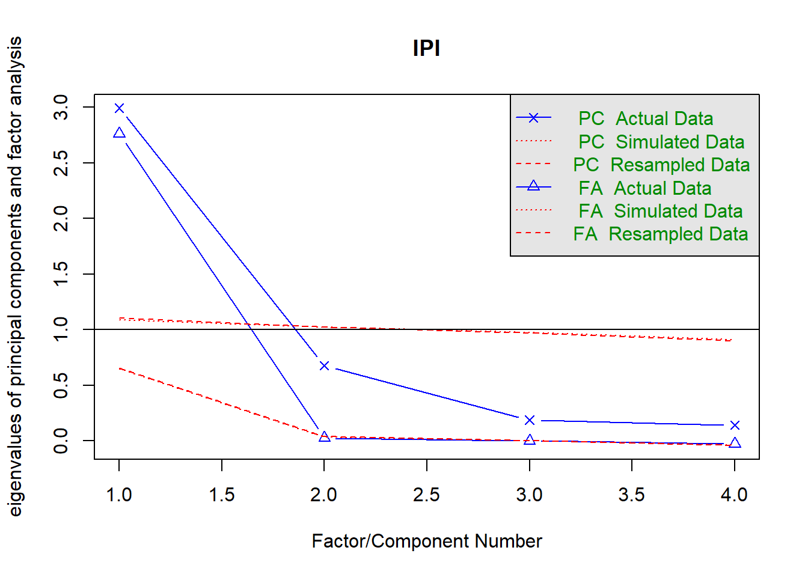
Parallel analysis suggests that the number of factors = 1 and the number of components = 1
IPI
Number of components: 1
EFA factor loadings (1 factor solution):
Loadings:
MR1
BioinspirationIPI4 0.925
BioinspirationIPI1 0.920
BioinspirationIPI3 0.898
BioinspirationIPI2r 0.507
MR1
SS loadings 2.765
Proportion Var 0.691
CFA summary and fit statistics:
lavaan 0.6-19 ended normally after 21 iterations
Estimator ML
Optimization method NLMINB
Number of model parameters 8
Number of observations 588
Model Test User Model:
Standard Scaled
Test Statistic 1.502 1.261
Degrees of freedom 2 2
P-value (Chi-square) 0.472 0.532
Scaling correction factor 1.192
Yuan-Bentler correction (Mplus variant)
Model Test Baseline Model:
Test statistic 1316.385 771.798
Degrees of freedom 6 6
P-value 0.000 0.000
Scaling correction factor 1.706
User Model versus Baseline Model:
Comparative Fit Index (CFI) 1.000 1.000
Tucker-Lewis Index (TLI) 1.001 1.003
Robust Comparative Fit Index (CFI) 1.000
Robust Tucker-Lewis Index (TLI) 1.002
Loglikelihood and Information Criteria:
Loglikelihood user model (H0) -2652.507 -2652.507
Scaling correction factor 1.465
for the MLR correction
Loglikelihood unrestricted model (H1) -2651.756 -2651.756
Scaling correction factor 1.410
for the MLR correction
Akaike (AIC) 5321.014 5321.014
Bayesian (BIC) 5356.028 5356.028
Sample-size adjusted Bayesian (SABIC) 5330.631 5330.631
Root Mean Square Error of Approximation:
RMSEA 0.000 0.000
90 Percent confidence interval - lower 0.000 0.000
90 Percent confidence interval - upper 0.075 0.065
P-value H_0: RMSEA <= 0.050 0.809 0.874
P-value H_0: RMSEA >= 0.080 0.036 0.016
Robust RMSEA 0.000
90 Percent confidence interval - lower 0.000
90 Percent confidence interval - upper 0.078
P-value H_0: Robust RMSEA <= 0.050 0.810
P-value H_0: Robust RMSEA >= 0.080 0.044
Standardized Root Mean Square Residual:
SRMR 0.007 0.007
Parameter Estimates:
Standard errors Sandwich
Information bread Observed
Observed information based on Hessian
Latent Variables:
Estimate Std.Err z-value P(>|z|) Std.lv Std.all
IPI =~
BioinsprtnIPI4 1.000 0.862 0.892
BioinsprtnIPI1 1.020 0.035 29.070 0.000 0.880 0.890
BioinsprtnIPI3 0.930 0.040 23.341 0.000 0.802 0.854
BionsprtnIPI2r 0.559 0.051 10.932 0.000 0.482 0.454
Variances:
Estimate Std.Err z-value P(>|z|) Std.lv Std.all
.BioinsprtnIPI4 0.191 0.026 7.332 0.000 0.191 0.204
.BioinsprtnIPI1 0.204 0.028 7.173 0.000 0.204 0.209
.BioinsprtnIPI3 0.240 0.028 8.482 0.000 0.240 0.271
.BionsprtnIPI2r 0.896 0.059 15.184 0.000 0.896 0.794
IPI 0.744 0.060 12.431 0.000 1.000 1.000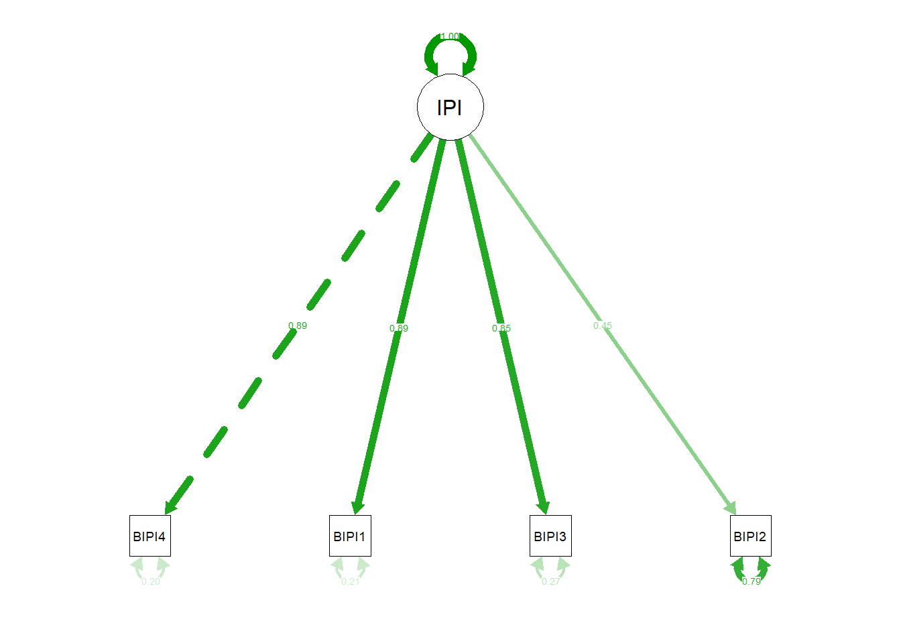
CFA first 6 Modification Indices:
lhs op rhs mi epc sepc.lv sepc.all
11 BioinspirationIPI4 ~~ BioinspirationIPI3 1.371 -0.044 -0.044 -0.206
14 BioinspirationIPI1 ~~ BioinspirationIPI2r 1.371 -0.027 -0.027 -0.063
15 BioinspirationIPI3 ~~ BioinspirationIPI2r 0.701 0.019 0.019 0.041
10 BioinspirationIPI4 ~~ BioinspirationIPI1 0.701 0.038 0.038 0.190
13 BioinspirationIPI1 ~~ BioinspirationIPI3 0.158 0.015 0.015 0.069
12 BioinspirationIPI4 ~~ BioinspirationIPI2r 0.158 0.009 0.009 0.022
sepc.nox
11 -0.206
14 -0.063
15 0.041
10 0.190
13 0.069
12 0.022des_tab <- tmp$desTable %>%
as.data.frame() %>%
select(Mean, SD, Skewness, `Kurtosis(-3)`, `KS-Test`)
stargazer(
des_tab,
summary = FALSE,
rownames = TRUE,
title = "Descriptive Statistics for Ecological Items",
label = "tab:ecology_desc",
digits = 2,
table.placement = "ht!",
font.size = "small"
)
% Table created by stargazer v.5.2.3 by Marek Hlavac, Social Policy Institute. E-mail: marek.hlavac at gmail.com
% Date and time: Do, Dez 04, 2025 - 09:13:13
\begin{table}[ht!] \centering
\caption{Descriptive Statistics for Ecological Items}
\label{tab:ecology_desc}
\small
\begin{tabular}{@{\extracolsep{5pt}} cccccc}
\\[-1.8ex]\hline
\hline \\[-1.8ex]
& Mean & SD & Skewness & Kurtosis(-3) & KS-Test \\
\hline \\[-1.8ex]
Bioinspiration-IPI4 & $3.78$ & $0.97$ & $$-$0.72$ & $0.10$ & $0$ \\
Bioinspiration-IPI1 & $3.79$ & $0.99$ & $$-$0.72$ & $0.02$ & $0$ \\
Bioinspiration-IPI3 & $3.93$ & $0.94$ & $$-$0.84$ & $0.35$ & $0$ \\
Bioinspiration-IPI2r & $3.40$ & $1.06$ & $$-$0.32$ & $$-$0.73$ & $0$ \\
\hline \\[-1.8ex]
\end{tabular}
\end{table} omega_results <- psych::omega(tmp_dat, nfactors = 1) # or more if needed
omega_resultsOmega
Call: omegah(m = m, nfactors = nfactors, fm = fm, key = key, flip = flip,
digits = digits, title = title, sl = sl, labels = labels,
plot = plot, n.obs = n.obs, rotate = rotate, Phi = Phi, option = option,
covar = covar)
Alpha: 0.85
G.6: 0.84
Omega Hierarchical: 0.87
Omega H asymptotic: 1
Omega Total 0.87
Schmid Leiman Factor loadings greater than 0.2
g F1* h2 h2 u2 p2 com
Bioinspiration-IPI4 0.89 0.80 0.80 0.20 1 1
Bioinspiration-IPI1 0.88 0.78 0.78 0.22 1 1
Bioinspiration-IPI3 0.86 0.74 0.74 0.26 1 1
Bioinspiration-IPI2r 0.45 0.21 0.21 0.79 1 1
With Sums of squares of:
g F1* h2
2.5 0.0 1.8
general/max 1.38 max/min = Inf
mean percent general = 1 with sd = 0 and cv of 0
Explained Common Variance of the general factor = 1
The degrees of freedom are 2 and the fit is 0
The number of observations was 588 with Chi Square = 1.8 with prob < 0.41
The root mean square of the residuals is 0.01
The df corrected root mean square of the residuals is 0.01
RMSEA index = 0 and the 90 % confidence intervals are 0 0.079
BIC = -10.96
Compare this with the adequacy of just a general factor and no group factors
The degrees of freedom for just the general factor are 2 and the fit is 0
The number of observations was 588 with Chi Square = 1.8 with prob < 0.41
The root mean square of the residuals is 0.01
The df corrected root mean square of the residuals is 0.01
RMSEA index = 0 and the 90 % confidence intervals are 0 0.079
BIC = -10.96
Measures of factor score adequacy
g F1*
Correlation of scores with factors 0.96 0
Multiple R square of scores with factors 0.91 0
Minimum correlation of factor score estimates 0.83 -1
Total, General and Subset omega for each subset
g F1*
Omega total for total scores and subscales 0.87 0.87
Omega general for total scores and subscales 0.87 0.87
Omega group for total scores and subscales 0.00 0.00omega_results$omega.tot # Total Omega[1] 0.8659359omega_results$omega.h # Hierarchical OmegaNULLomega_results$omega.g # Group Omega (if multiple factors) total general group
g 0.8659359 0.865911 0
F1* 0.8659110 0.865911 06.3.4 Perceived Naturalness (PN)
regEx <- "^Bioinspiration-PN"
nameVariable <- "PN"
sum(str_detect(string = colnames(dat), pattern = regEx))[1] 4tmp_dat <- na.omit(dat[,str_detect(string = colnames(dat), pattern = regEx)])
tmp <- CFAstats(dataset = tmp_dat, regularExp = regEx, labelLatent = str_remove(string = nameVariable, pattern = "mean_"),
showPlots = TRUE,
computeEFA = TRUE,
computeCFA = TRUE,
computeCFAMplus = FALSE)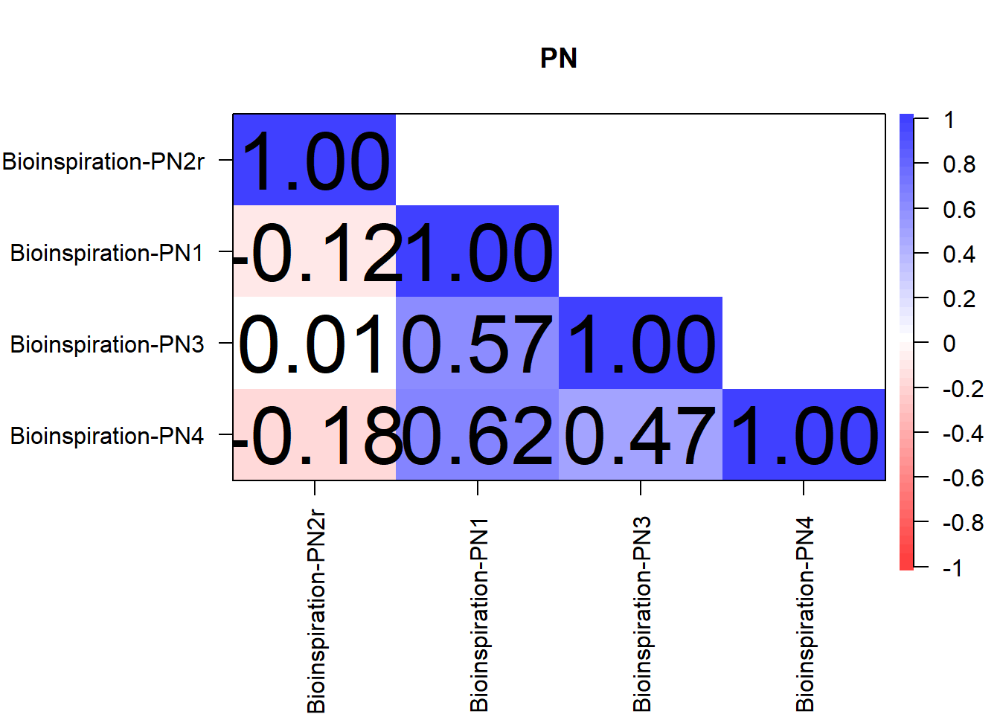
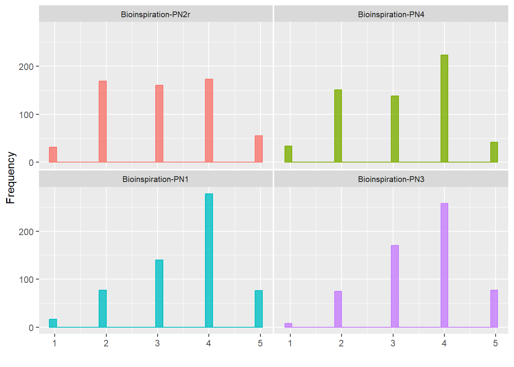
descriptive statistics:
Mean SD Median CoeffofVariation Minimum Maximun
Bioinspiration-PN2r 3.09 1.08 3 0.35 1 5
Bioinspiration-PN1 3.54 0.97 4 0.27 1 5
Bioinspiration-PN3 3.55 0.92 4 0.26 1 5
Bioinspiration-PN4 3.15 1.06 3 0.34 1 5
Lower Quantile Upper Quantile Skewness Kurtosis(-3) KS-Test
Bioinspiration-PN2r 1 5 0.02 -0.87 0
Bioinspiration-PN1 1 5 -0.60 -0.10 0
Bioinspiration-PN3 1 5 -0.38 -0.31 0
Bioinspiration-PN4 1 5 -0.23 -0.87 0
variables under investigation: BioinspirationPN2r BioinspirationPN1 BioinspirationPN3 BioinspirationPN4 Some items ( Bioinspiration-PN2r ) were negatively correlated with the first principal component and
probably should be reversed.
To do this, run the function again with the 'check.keys=TRUE' optionCronbachs Alpha: 0.54 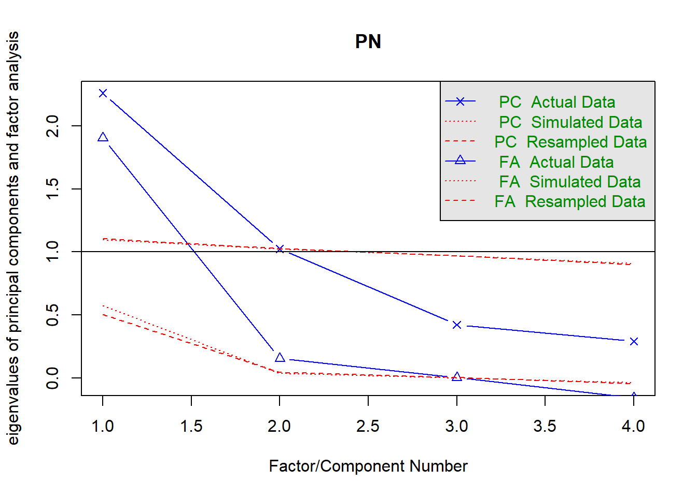
Parallel analysis suggests that the number of factors = 2 and the number of components = 1
PN
Number of components: 1
KMO criteria is to low (< .6) for:
BioinspirationPN2r
mean KMO: 0.68
EFA factor loadings (1 factor solution):
Loadings:
MR1
BioinspirationPN2r -0.123
BioinspirationPN1 0.906
BioinspirationPN3 0.693
BioinspirationPN4 0.769
MR1
SS loadings 1.906
Proportion Var 0.476
CFA summary and fit statistics:
lavaan 0.6-19 ended normally after 42 iterations
Estimator ML
Optimization method NLMINB
Number of model parameters 8
Number of observations 588
Model Test User Model:
Standard Scaled
Test Statistic 21.187 16.562
Degrees of freedom 2 2
P-value (Chi-square) 0.000 0.000
Scaling correction factor 1.279
Yuan-Bentler correction (Mplus variant)
Model Test Baseline Model:
Test statistic 570.568 423.092
Degrees of freedom 6 6
P-value 0.000 0.000
Scaling correction factor 1.349
User Model versus Baseline Model:
Comparative Fit Index (CFI) 0.966 0.965
Tucker-Lewis Index (TLI) 0.898 0.895
Robust Comparative Fit Index (CFI) 0.967
Robust Tucker-Lewis Index (TLI) 0.901
Loglikelihood and Information Criteria:
Loglikelihood user model (H0) -3075.573 -3075.573
Scaling correction factor 1.057
for the MLR correction
Loglikelihood unrestricted model (H1) -3064.979 -3064.979
Scaling correction factor 1.102
for the MLR correction
Akaike (AIC) 6167.145 6167.145
Bayesian (BIC) 6202.159 6202.159
Sample-size adjusted Bayesian (SABIC) 6176.762 6176.762
Root Mean Square Error of Approximation:
RMSEA 0.128 0.111
90 Percent confidence interval - lower 0.082 0.071
90 Percent confidence interval - upper 0.179 0.157
P-value H_0: RMSEA <= 0.050 0.003 0.008
P-value H_0: RMSEA >= 0.080 0.957 0.902
Robust RMSEA 0.126
90 Percent confidence interval - lower 0.075
90 Percent confidence interval - upper 0.185
P-value H_0: Robust RMSEA <= 0.050 0.009
P-value H_0: Robust RMSEA >= 0.080 0.931
Standardized Root Mean Square Residual:
SRMR 0.043 0.043
Parameter Estimates:
Standard errors Sandwich
Information bread Observed
Observed information based on Hessian
Latent Variables:
Estimate Std.Err z-value P(>|z|) Std.lv Std.all
PN =~
BioinsprtnPN2r 1.000 0.151 0.140
BioinspirtnPN1 -5.564 2.081 -2.674 0.007 -0.839 -0.864
BioinspirtnPN3 -4.015 1.561 -2.572 0.010 -0.605 -0.658
BioinspirtnPN4 -5.089 1.876 -2.713 0.007 -0.767 -0.721
Variances:
Estimate Std.Err z-value P(>|z|) Std.lv Std.all
.BioinsprtnPN2r 1.136 0.053 21.422 0.000 1.136 0.980
.BioinspirtnPN1 0.239 0.048 4.945 0.000 0.239 0.253
.BioinspirtnPN3 0.480 0.038 12.496 0.000 0.480 0.567
.BioinspirtnPN4 0.542 0.051 10.543 0.000 0.542 0.480
PN 0.023 0.017 1.322 0.186 1.000 1.000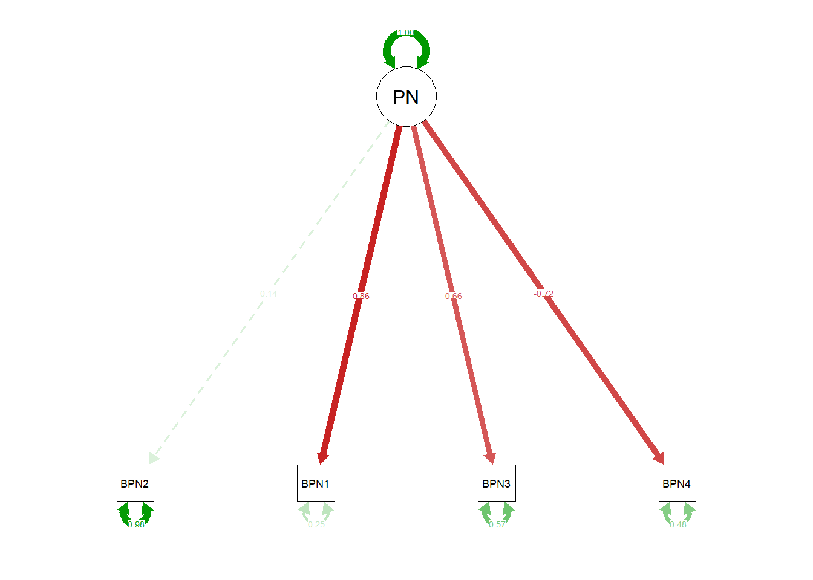
CFA first 6 Modification Indices:
lhs op rhs mi epc sepc.lv sepc.all
14 BioinspirationPN1 ~~ BioinspirationPN4 14.545 -0.899 -0.899 -2.500
11 BioinspirationPN2r ~~ BioinspirationPN3 14.545 0.127 0.127 0.173
12 BioinspirationPN2r ~~ BioinspirationPN4 11.330 -0.125 -0.125 -0.159
13 BioinspirationPN1 ~~ BioinspirationPN3 11.330 0.549 0.549 1.623
10 BioinspirationPN2r ~~ BioinspirationPN1 0.000 0.001 0.001 0.001
15 BioinspirationPN3 ~~ BioinspirationPN4 0.000 -0.002 -0.002 -0.004
sepc.nox
14 -2.500
11 0.173
12 -0.159
13 1.623
10 0.001
15 -0.0046.4 Delete Items
dat$`Bioinspiration-PN2r` <- NULL6.4.1 run again: Perceived Naturalness (PN)
regEx <- "^Bioinspiration-PN"
nameVariable <- "PN"
sum(str_detect(string = colnames(dat), pattern = regEx))[1] 3tmp_dat <- na.omit(dat[,str_detect(string = colnames(dat), pattern = regEx)])
tmp <- CFAstats(dataset = tmp_dat, regularExp = regEx, labelLatent = str_remove(string = nameVariable, pattern = "mean_"),
showPlots = TRUE,
computeEFA = TRUE,
computeCFA = TRUE,
computeCFAMplus = FALSE)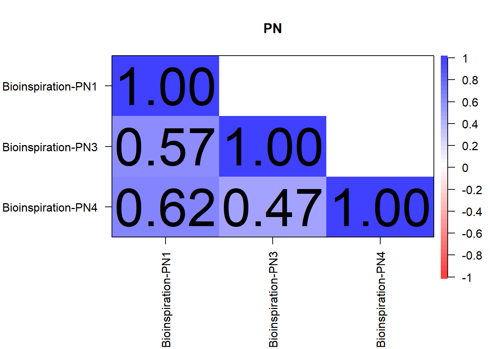
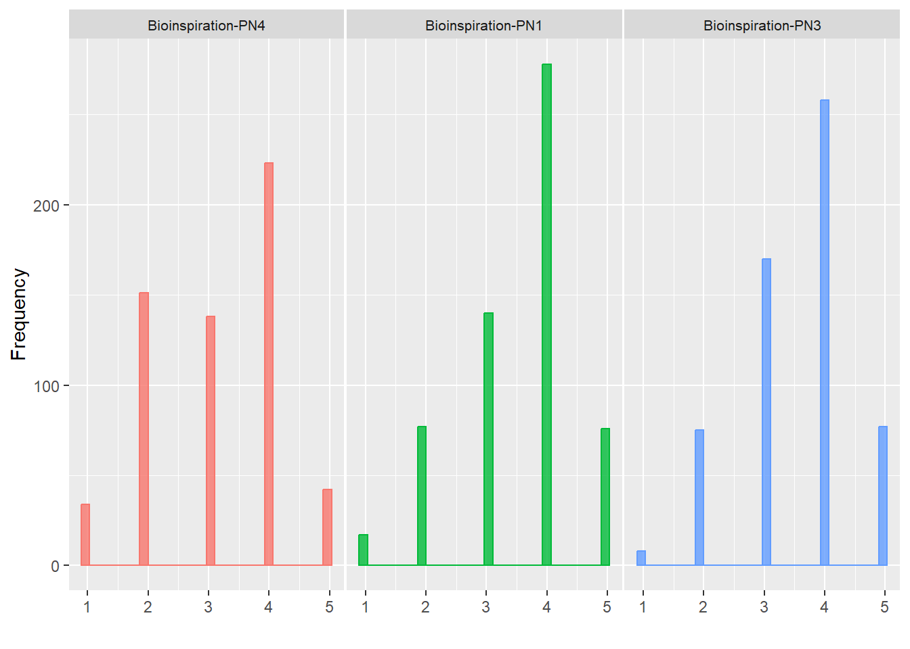
descriptive statistics:
Mean SD Median CoeffofVariation Minimum Maximun
Bioinspiration-PN1 3.54 0.97 4 0.27 1 5
Bioinspiration-PN3 3.55 0.92 4 0.26 1 5
Bioinspiration-PN4 3.15 1.06 3 0.34 1 5
Lower Quantile Upper Quantile Skewness Kurtosis(-3) KS-Test
Bioinspiration-PN1 1 5 -0.60 -0.10 0
Bioinspiration-PN3 1 5 -0.38 -0.31 0
Bioinspiration-PN4 1 5 -0.23 -0.87 0
variables under investigation: BioinspirationPN1 BioinspirationPN3 BioinspirationPN4
Cronbachs Alpha: 0.79 
Parallel analysis suggests that the number of factors = 1 and the number of components = 1
PN
Number of components: 1
EFA factor loadings (1 factor solution):
Loadings:
MR1
BioinspirationPN1 0.906
BioinspirationPN3 0.709
BioinspirationPN4 0.752
MR1
SS loadings 1.89
Proportion Var 0.63
CFA summary and fit statistics:
lavaan 0.6-19 ended normally after 15 iterations
Estimator ML
Optimization method NLMINB
Number of model parameters 6
Number of observations 588
Model Test User Model:
Standard Scaled
Test Statistic 0.000 0.000
Degrees of freedom 0 0
Model Test Baseline Model:
Test statistic 539.831 383.396
Degrees of freedom 3 3
P-value 0.000 0.000
Scaling correction factor 1.408
User Model versus Baseline Model:
Comparative Fit Index (CFI) 1.000 1.000
Tucker-Lewis Index (TLI) 1.000 1.000
Robust Comparative Fit Index (CFI) NA
Robust Tucker-Lewis Index (TLI) NA
Loglikelihood and Information Criteria:
Loglikelihood user model (H0) -2202.669 -2202.669
Loglikelihood unrestricted model (H1) -2202.669 -2202.669
Akaike (AIC) 4417.338 4417.338
Bayesian (BIC) 4443.599 4443.599
Sample-size adjusted Bayesian (SABIC) 4424.551 4424.551
Root Mean Square Error of Approximation:
RMSEA 0.000 NA
90 Percent confidence interval - lower 0.000 NA
90 Percent confidence interval - upper 0.000 NA
P-value H_0: RMSEA <= 0.050 NA NA
P-value H_0: RMSEA >= 0.080 NA NA
Robust RMSEA 0.000
90 Percent confidence interval - lower 0.000
90 Percent confidence interval - upper 0.000
P-value H_0: Robust RMSEA <= 0.050 NA
P-value H_0: Robust RMSEA >= 0.080 NA
Standardized Root Mean Square Residual:
SRMR 0.000 0.000
Parameter Estimates:
Standard errors Sandwich
Information bread Observed
Observed information based on Hessian
Latent Variables:
Estimate Std.Err z-value P(>|z|) Std.lv Std.all
PN =~
BioinspirtnPN1 1.000 0.840 0.865
BioinspirtnPN3 0.725 0.058 12.499 0.000 0.609 0.662
BioinspirtnPN4 0.907 0.065 13.869 0.000 0.762 0.717
Variances:
Estimate Std.Err z-value P(>|z|) Std.lv Std.all
.BioinspirtnPN1 0.237 0.050 4.732 0.000 0.237 0.251
.BioinspirtnPN3 0.475 0.039 12.158 0.000 0.475 0.562
.BioinspirtnPN4 0.550 0.050 10.991 0.000 0.550 0.487
PN 0.705 0.070 10.145 0.000 1.000 1.000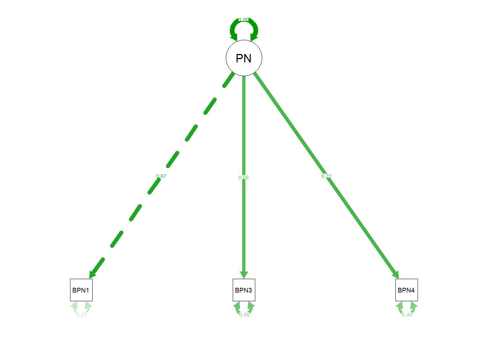
CFA first 6 Modification Indices:
[1] lhs op rhs mi epc sepc.lv sepc.all sepc.nox
<0 Zeilen> (oder row.names mit Länge 0)des_tab <- tmp$desTable %>%
as.data.frame() %>%
select(Mean, SD, Skewness, `Kurtosis(-3)`, `KS-Test`)
stargazer(
des_tab,
summary = FALSE,
rownames = TRUE,
title = "Descriptive Statistics for Ecological Items",
label = "tab:ecology_desc",
digits = 2,
table.placement = "ht!",
font.size = "small"
)
% Table created by stargazer v.5.2.3 by Marek Hlavac, Social Policy Institute. E-mail: marek.hlavac at gmail.com
% Date and time: Do, Dez 04, 2025 - 09:13:19
\begin{table}[ht!] \centering
\caption{Descriptive Statistics for Ecological Items}
\label{tab:ecology_desc}
\small
\begin{tabular}{@{\extracolsep{5pt}} cccccc}
\\[-1.8ex]\hline
\hline \\[-1.8ex]
& Mean & SD & Skewness & Kurtosis(-3) & KS-Test \\
\hline \\[-1.8ex]
Bioinspiration-PN1 & $3.54$ & $0.97$ & $$-$0.60$ & $$-$0.10$ & $0$ \\
Bioinspiration-PN3 & $3.55$ & $0.92$ & $$-$0.38$ & $$-$0.31$ & $0$ \\
Bioinspiration-PN4 & $3.15$ & $1.06$ & $$-$0.23$ & $$-$0.87$ & $0$ \\
\hline \\[-1.8ex]
\end{tabular}
\end{table} omega_results <- psych::omega(tmp_dat, nfactors = 1) # or more if needed
omega_resultsOmega
Call: omegah(m = m, nfactors = nfactors, fm = fm, key = key, flip = flip,
digits = digits, title = title, sl = sl, labels = labels,
plot = plot, n.obs = n.obs, rotate = rotate, Phi = Phi, option = option,
covar = covar)
Alpha: 0.79
G.6: 0.72
Omega Hierarchical: 0.79
Omega H asymptotic: 1
Omega Total 0.79
Schmid Leiman Factor loadings greater than 0.2
g F1* h2 h2 u2 p2 com
Bioinspiration-PN1 0.87 0.75 0.75 0.25 1 1
Bioinspiration-PN3 0.66 0.44 0.44 0.56 1 1
Bioinspiration-PN4 0.72 0.51 0.51 0.49 1 1
With Sums of squares of:
g F1* h2
1.7 0.0 1.0
general/max 1.67 max/min = 1.830984e+16
mean percent general = 1 with sd = 0 and cv of 0
Explained Common Variance of the general factor = 1
The degrees of freedom are 0 and the fit is 0
The number of observations was 588 with Chi Square = 0 with prob < NA
The root mean square of the residuals is 0
The df corrected root mean square of the residuals is NA
Compare this with the adequacy of just a general factor and no group factors
The degrees of freedom for just the general factor are 0 and the fit is 0
The number of observations was 588 with Chi Square = 0 with prob < NA
The root mean square of the residuals is 0
The df corrected root mean square of the residuals is NA
Measures of factor score adequacy
g F1*
Correlation of scores with factors 0.91 0
Multiple R square of scores with factors 0.83 0
Minimum correlation of factor score estimates 0.66 -1
Total, General and Subset omega for each subset
g F1*
Omega total for total scores and subscales 0.79 0.79
Omega general for total scores and subscales 0.79 0.79
Omega group for total scores and subscales 0.00 0.00omega_results$omega.tot # Total Omega[1] 0.7948833omega_results$omega.h # Hierarchical OmegaNULLomega_results$omega.g # Group Omega (if multiple factors) total general group
g 0.7948833 0.7948832 8.762741e-18
F1* 0.7948832 0.7948832 8.762741e-186.4.2 run again: EFA for “Bioinspiration Items”
#### Overall EFA
regExOverall <- "^Bioinspiration"
psych::cor.plot(r = cor(dat[, str_detect(string = colnames(dat),
pattern = regExOverall)]
, use = "pairwise.complete.obs"),
upper = FALSE, xlas = 2, main = "Overall")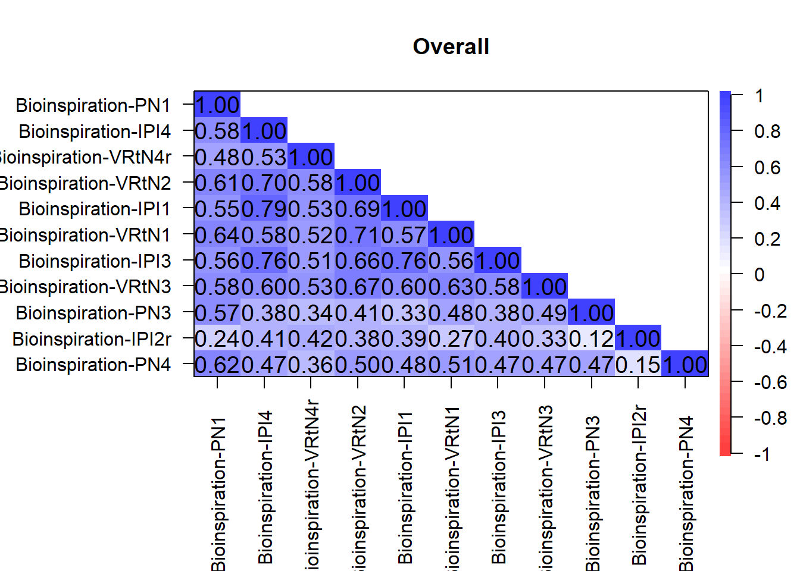
#> parallel analysis
tmp_parallelAnalysis <- dimensionalityTest(label = "Overall",
regEx = regExOverall, dataset = dat)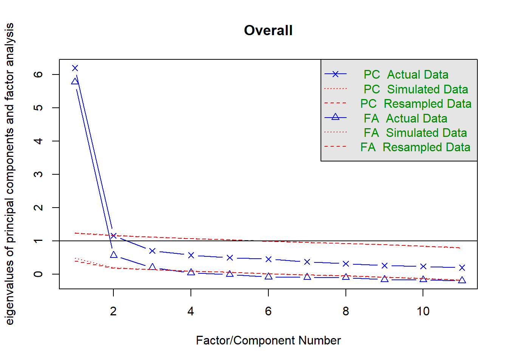
Parallel analysis suggests that the number of factors = 3 and the number of components = 1
Overall
Number of components: 1 #> EFA (# of factors=5)
tmp_EFA <- explorativeFactorAnalysis(label = "Overall",
regEx = regExOverall,
dataset = dat, nfac = 2)Warning in fa.stats(r = r, f = f, phi = phi, n.obs = n.obs, np.obs = np.obs, :
The estimated weights for the factor scores are probably incorrect. Try a
different factor score estimation method.tmp_EFA[[1]]Factor Analysis using method = minres
Call: fa(r = tmp_dat, nfactors = nfac, rotate = "promax", cor = "cor")
Standardized loadings (pattern matrix) based upon correlation matrix
MR1 MR2 h2 u2 com
Bioinspiration-PN1 0.03 0.82 0.71 0.29 1.0
Bioinspiration-IPI4 0.80 0.09 0.75 0.25 1.0
Bioinspiration-VRtN4r 0.52 0.19 0.44 0.56 1.3
Bioinspiration-VRtN2 0.58 0.32 0.71 0.29 1.6
Bioinspiration-IPI1 0.84 0.04 0.75 0.25 1.0
Bioinspiration-VRtN1 0.26 0.58 0.62 0.38 1.4
Bioinspiration-IPI3 0.76 0.10 0.69 0.31 1.0
Bioinspiration-VRtN3 0.38 0.46 0.59 0.41 1.9
Bioinspiration-PN3 -0.19 0.81 0.48 0.52 1.1
Bioinspiration-IPI2r 0.65 -0.20 0.28 0.72 1.2
Bioinspiration-PN4 0.00 0.70 0.49 0.51 1.0
MR1 MR2
SS loadings 3.57 2.94
Proportion Var 0.32 0.27
Cumulative Var 0.32 0.59
Proportion Explained 0.55 0.45
Cumulative Proportion 0.55 1.00
With factor correlations of
MR1 MR2
MR1 1.00 0.71
MR2 0.71 1.00
Mean item complexity = 1.2
Test of the hypothesis that 2 factors are sufficient.
df null model = 55 with the objective function = 6.91 with Chi Square = 4026.24
df of the model are 34 and the objective function was 0.28
The root mean square of the residuals (RMSR) is 0.03
The df corrected root mean square of the residuals is 0.04
The harmonic n.obs is 588 with the empirical chi square 60.17 with prob < 0.0037
The total n.obs was 588 with Likelihood Chi Square = 163.07 with prob < 8.8e-19
Tucker Lewis Index of factoring reliability = 0.947
RMSEA index = 0.08 and the 90 % confidence intervals are 0.068 0.093
BIC = -53.74
Fit based upon off diagonal values = 1
Measures of factor score adequacy
MR1 MR2
Correlation of (regression) scores with factors 0.96 0.94
Multiple R square of scores with factors 0.92 0.88
Minimum correlation of possible factor scores 0.83 0.766.5 Item Response Theory (polytomous) for “Bioinspiration Items”
Factor Loadings (F1) indicate how strongly each item is associated with the latent trait, rule of thumb:
- 0.70 = strong
- 0.40–0.69 = moderate
- < 0.40 = weak
Communality (h²) is the proportion of variance in each item explained by the factor, rule of thumb: + h² > 0.40 → item is well represented + h² < 0.30 → potentially problematic item
if(runIRTmodels){
# Choose dataset and regular expression
regEx <- "^Bioinspiration"
# Filter variables matching the pattern
irt_items <- dat[, str_detect(colnames(dat), pattern = regEx)]
# Drop rows with missing data (mirt requires complete cases)
irt_items <- na.omit(irt_items)
# Ensure all items are treated as ordered factors
irt_items[] <- lapply(irt_items, function(x) as.numeric(as.character(x)))
# Fit Graded Response Model (1-factor)
mod_grm <- mirt(data = irt_items, model = 1, itemtype = "graded", verbose = FALSE)
# Summarize model
summary(mod_grm)
# Plot Item Characteristic Curves (ICCs) for all items
plot(mod_grm, type = "trace", facet_items = TRUE, main = "Item Characteristic Curves")
# Plot Test Information Curve
plot(mod_grm, type = "info", main = "Test Information Curve: Bioinspiration")
### compare results to:
cor.plot(r = cor(irt_items))
}Compare 1-Factor vs. 2-Factor Models:
if(runIRTmodels){
mod_1f <- mirt(data = irt_items, model = 1, itemtype = "graded", verbose = FALSE)
mod_2f <- mirt(data = irt_items, model = 2, itemtype = "graded", verbose = FALSE)
mod_3f <- mirt(data = irt_items, model = 3, itemtype = "graded", verbose = FALSE)
anova(mod_1f, mod_2f, mod_3f)
summary(mod_2f)
summary(mod_3f)
}significant p-value (e.g., < .05) supports the 2-factor model.
7 Compute mean scores
dat$mean_Bioinspiration <- rowMeans(x = dat[,str_subset(colnames(dat), pattern = "^Bioinspiration")])
dat$mean_Bioinspiration_PN <- rowMeans(x = dat[,str_subset(colnames(dat), pattern = "^Bioinspiration-PN")])
dat$mean_Bioinspiration_IPI <- rowMeans(x = dat[,str_subset(colnames(dat), pattern = "^Bioinspiration-IPI")])
dat$mean_Bioinspiration_VRtN <- rowMeans(x = dat[,str_subset(colnames(dat), pattern = "^Bioinspiration-VRtN")])
dat$mean_Ecological <- rowMeans(x = dat[,str_subset(colnames(dat), pattern = "^EcologicalDimension")])manifest correlations:
psych::cor.plot(r = cor(dat[, str_detect(string = colnames(dat),
pattern = "^mean_")]
, use = "pairwise.complete.obs"),
upper = FALSE, xlas = 2, main = "Overall")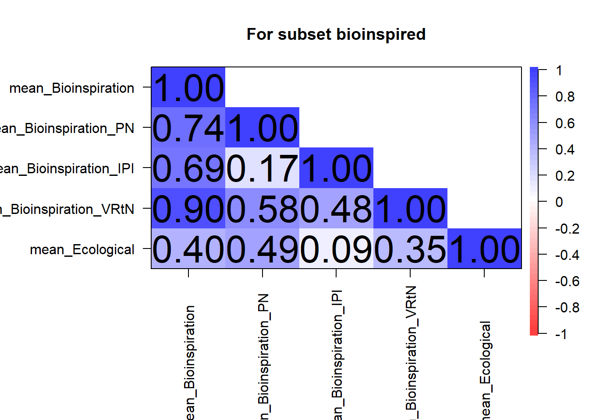
psych::cor.plot(r = cor(dat[dat$framingCondition == "bioinspired", str_detect(string = colnames(dat),
pattern = "^mean_")]
, use = "pairwise.complete.obs"),
upper = FALSE, xlas = 2, main = "For subset bioinspired")
plot(dat[dat$framingCondition == "bioinspired", "mean_Ecological"], dat[dat$framingCondition == "bioinspired", "mean_Bioinspiration_IPI"]) # PN most strongly related to sustainability
plot(dat[dat$framingCondition == "bioinspired", "mean_Ecological"], dat[dat$framingCondition == "bioinspired", "mean_Bioinspiration_PN"])
psych::cor.plot(r = cor(dat[dat$framingCondition == "neutral", str_detect(string = colnames(dat),
pattern = "^mean_")]
, use = "pairwise.complete.obs"),
upper = FALSE, xlas = 2, main = "For subset neutral")
psych::cor.plot(r = cor(dat[dat$framingCondition == "sustainable", str_detect(string = colnames(dat),
pattern = "^mean_")]
, use = "pairwise.complete.obs"),
upper = FALSE, xlas = 2, main = "For subset sustainable")
dat %>%
group_by(framingCondition) %>%
summarise(N = n(), mean_Ecological=mean(mean_Ecological),
mean_Bioinspiration=mean(mean_Bioinspiration),
mean_Bioinspiration_PN=mean(mean_Bioinspiration_PN),
mean_Bioinspiration_IPI=mean(mean_Bioinspiration_IPI),
mean_Bioinspiration_VRtN=mean(mean_Bioinspiration_VRtN))# A tibble: 3 × 7
framingCondition N mean_Ecological mean_Bioinspiration
<fct> <int> <dbl> <dbl>
1 bioinspired 194 4.83 3.92
2 neutral 197 5.46 3.48
3 sustainable 197 5.88 3.18
# ℹ 3 more variables: mean_Bioinspiration_PN <dbl>,
# mean_Bioinspiration_IPI <dbl>, mean_Bioinspiration_VRtN <dbl>8 Test Hypotheses
8.1 Descriptive
# Summaries of participant-level scores by framing condition
eco_summary <- data_summary(dat, "mean_Ecological", "framingCondition")Lade nötiges Paket: plyr------------------------------------------------------------------------------You have loaded plyr after dplyr - this is likely to cause problems.
If you need functions from both plyr and dplyr, please load plyr first, then dplyr:
library(plyr); library(dplyr)------------------------------------------------------------------------------
Attache Paket: 'plyr'Die folgenden Objekte sind maskiert von 'package:dplyr':
arrange, count, desc, failwith, id, mutate, rename, summarise,
summarizeDas folgende Objekt ist maskiert 'package:purrr':
compactbio_summary <- data_summary(dat, "mean_Bioinspiration", "framingCondition")
# View results
print(eco_summary) framingCondition mean_Ecological se
1 bioinspired 4.827320 0.07590334
2 neutral 5.464467 0.06789697
3 sustainable 5.883249 0.05971585print(bio_summary) framingCondition mean_Bioinspiration se
1 bioinspired 3.917526 0.03680891
2 neutral 3.476234 0.05016594
3 sustainable 3.184587 0.05806461# Plots the mean scores on the Bioinspiration & Ecological Dimension by Framing Condition
ggplot(dat, aes(x = framingCondition, y = mean_Ecological)) +
geom_boxplot(fill = "lightgreen") +
labs(title = "Ecological Dimension by Framing", y = "Mean Score") +
theme_minimal()
ggplot(dat, aes(x = framingCondition, y = mean_Bioinspiration)) +
geom_boxplot(fill = "skyblue") +
labs(title = "Bioinspiration by Framing", y = "Mean Score") +
theme_minimal()
8.2 ANOVAs
ANOVAs + post hoc tests:
# --- ANOVA for Bioinspiration ---
aov_bio <- aov_ez(
id = "PROLIFIC_PID", # replace with your participant ID column name
dv = "mean_Bioinspiration",
data = dat,
between = "framingCondition"
)
print(aov_bio)Anova Table (Type 3 tests)
Response: mean_Bioinspiration
Effect df MSE F ges p.value
1 framingCondition 2, 585 0.48 55.95 *** .161 <.001
---
Signif. codes: 0 '***' 0.001 '**' 0.01 '*' 0.05 '+' 0.1 ' ' 1# Post hoc (Tukey) for Bioinspiration
em_bio <- emmeans(aov_bio, "framingCondition")
bio_posthoc <- pairs(em_bio, adjust = "tukey")
print(bio_posthoc) contrast estimate SE df t.ratio p.value
bioinspired - neutral 0.441 0.0697 585 6.328 <.0001
bioinspired - sustainable 0.733 0.0697 585 10.510 <.0001
neutral - sustainable 0.292 0.0695 585 4.198 0.0001
P value adjustment: tukey method for comparing a family of 3 estimates # --- ANOVA for Ecological Dimension ---
aov_eco <- aov_ez(
id = "PROLIFIC_PID", # replace with your participant ID column name
dv = "mean_Ecological",
data = dat,
between = "framingCondition"
)
print(aov_eco)Anova Table (Type 3 tests)
Response: mean_Ecological
Effect df MSE F ges p.value
1 framingCondition 2, 585 0.91 60.78 *** .172 <.001
---
Signif. codes: 0 '***' 0.001 '**' 0.01 '*' 0.05 '+' 0.1 ' ' 1# Post hoc (Tukey) for Ecological
em_eco <- emmeans(aov_eco, "framingCondition")
eco_posthoc <- pairs(em_eco, adjust = "tukey")
print(eco_posthoc) contrast estimate SE df t.ratio p.value
bioinspired - neutral -0.637 0.0964 585 -6.609 <.0001
bioinspired - sustainable -1.056 0.0964 585 -10.953 <.0001
neutral - sustainable -0.419 0.0960 585 -4.361 <.0001
P value adjustment: tukey method for comparing a family of 3 estimates plots in APA7 style:
# Summarize means and SE for plotting
bio_plot_data <- data_summary(dat, "mean_Bioinspiration", "framingCondition")
eco_plot_data <- data_summary(dat, "mean_Ecological", "framingCondition")
# --- Bioinspiration Plot ---
ggplot(bio_plot_data, aes(x = framingCondition, y = mean_Bioinspiration)) +
geom_col(fill = "grey80", color = "black", width = 0.6) +
geom_errorbar(aes(ymin = mean_Bioinspiration - se, ymax = mean_Bioinspiration + se), width = 0.15) +
labs(x = "Framing Condition", y = "Mean Bioinspiration Score") +
theme_apa() +
theme(
axis.title = element_text(face = "bold"),
legend.position = "none"
)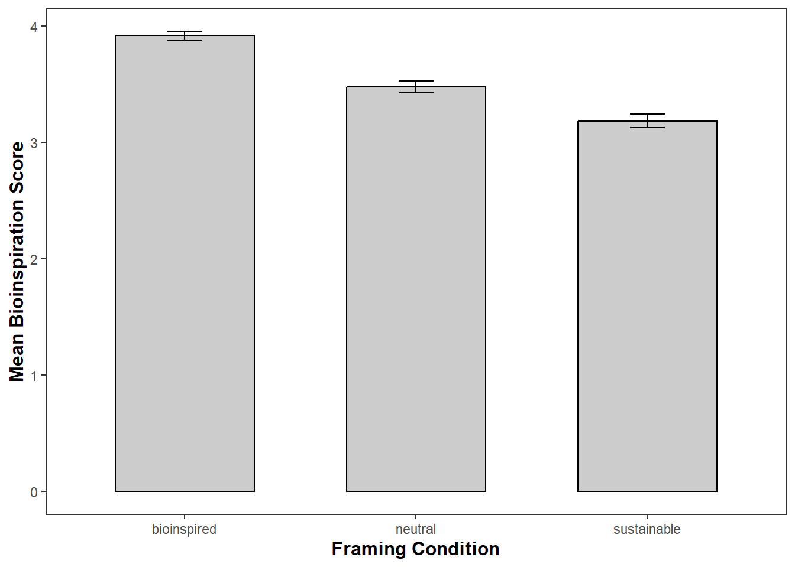
# --- Ecological Dimension Plot ---
ggplot(eco_plot_data, aes(x = framingCondition, y = mean_Ecological)) +
geom_col(fill = "grey60", color = "black", width = 0.6) +
geom_errorbar(aes(ymin = mean_Ecological - se, ymax = mean_Ecological + se), width = 0.15) +
labs(x = "Framing Condition", y = "Mean Ecological Score") +
theme_apa() +
theme(
axis.title = element_text(face = "bold"),
legend.position = "none"
)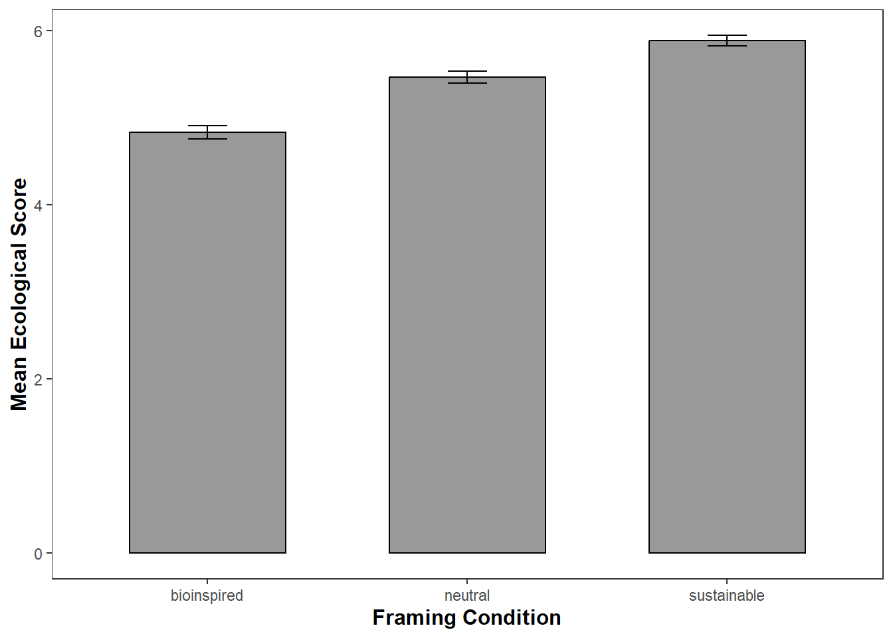
8.3 Spillover
We are comparing the effect size or magnitude of:
- How much “bioinspired” framing boosts sustainability ratings.
- How much “sustainable” framing boosts bioinspiration ratings.
# Subset only relevant cases and variables
dat_subset <- dat %>%
# filter(framingCondition %in% c("bioinspired", "sustainable")) %>%
select(PROLIFIC_PID, framingCondition, mean_Bioinspiration, mean_Ecological)
# Standardize the two scales
dat_subset <- dat_subset %>%
mutate(
z_Bioinspiration = scale(mean_Bioinspiration)[, 1],
z_Sustainability = scale(mean_Ecological)[, 1]
)
# Convert to long format
dat_long_scaled <- dat_subset %>%
pivot_longer(cols = c(z_Bioinspiration, z_Sustainability),
names_to = "ratingType",
values_to = "ratingScore") %>%
mutate(
ratingType = dplyr::recode(ratingType,
"z_Bioinspiration" = "Bioinspiration",
"z_Sustainability" = "Sustainability"),
framingCondition = factor(framingCondition),
ratingType = factor(ratingType)
)
dat_long_scaled$ratingType <- as.factor(dat_long_scaled$ratingType)
dat_long_scaled$framingCondition <- relevel(dat_long_scaled$framingCondition, ref = "neutral")The interaction term now reflects difference in effect sizes in standard deviation units (comparable spillover strength):
levels(dat_long_scaled$framingCondition)[1] "neutral" "bioinspired" "sustainable"levels(dat_long_scaled$ratingType)[1] "Bioinspiration" "Sustainability"# Run interaction model
model_scaled <- lm(ratingScore ~ framingCondition * ratingType, data = dat_long_scaled)
summary(model_scaled)
Call:
lm(formula = ratingScore ~ framingCondition * ratingType, data = dat_long_scaled)
Residuals:
Min 1Q Median 3Q Max
-3.7137 -0.6056 0.1098 0.6014 2.4166
Coefficients:
Estimate Std. Error
(Intercept) -0.06374 0.06516
framingConditionbioinspired 0.58743 0.09251
framingConditionsustainable -0.38823 0.09216
ratingTypeSustainability 0.13060 0.09216
framingConditionbioinspired:ratingTypeSustainability -1.19675 0.13083
framingConditionsustainable:ratingTypeSustainability 0.78872 0.13033
t value Pr(>|t|)
(Intercept) -0.978 0.328
framingConditionbioinspired 6.350 3.08e-10 ***
framingConditionsustainable -4.213 2.72e-05 ***
ratingTypeSustainability 1.417 0.157
framingConditionbioinspired:ratingTypeSustainability -9.147 < 2e-16 ***
framingConditionsustainable:ratingTypeSustainability 6.052 1.93e-09 ***
---
Signif. codes: 0 '***' 0.001 '**' 0.01 '*' 0.05 '.' 0.1 ' ' 1
Residual standard error: 0.9146 on 1170 degrees of freedom
Multiple R-squared: 0.1663, Adjusted R-squared: 0.1627
F-statistic: 46.68 on 5 and 1170 DF, p-value: < 2.2e-16dat_long_scaled %>%
group_by(framingCondition, ratingType) %>%
dplyr::summarise(
N = n(),
mean_DV = mean(ratingScore, na.rm = TRUE)
)`summarise()` has grouped output by 'framingCondition'. You can override using
the `.groups` argument.# A tibble: 6 × 4
# Groups: framingCondition [3]
framingCondition ratingType N mean_DV
<fct> <fct> <int> <dbl>
1 neutral Bioinspiration 197 -0.0637
2 neutral Sustainability 197 0.0669
3 bioinspired Bioinspiration 194 0.524
4 bioinspired Sustainability 194 -0.542
5 sustainable Bioinspiration 197 -0.452
6 sustainable Sustainability 197 0.467 ggplot(dat_long_scaled, aes(x = framingCondition, y = ratingScore, fill = ratingType)) +
scale_fill_manual(
values = c("Bioinspiration" = "#A67C49", "Sustainability" = "#55A868")
) +
stat_summary(fun = mean, geom = "bar", position = position_dodge(0.7), width = 0.6, color = "black") +
stat_summary(fun.data = mean_se, geom = "errorbar",
position = position_dodge(0.7), width = 0.15) +
labs(x = "Framing Condition", y = "Rating Score", fill = "Rating Type") +
theme_minimal()
ggplot(dat_long_scaled, aes(x = ratingType, y = ratingScore, fill = framingCondition)) +
scale_fill_manual(
values = c("bioinspired" = "#A67C49", "sustainable" = "#55A868", "neutral" = "#E8D28B")
) +
stat_summary(fun = mean, geom = "bar", position = position_dodge(0.7), width = 0.6, color = "black") +
stat_summary(fun.data = mean_se, geom = "errorbar",
position = position_dodge(0.7), width = 0.15) +
labs(x = "Framing Condition", y = "Rating Score", fill = "Rating Type") +
theme_minimal()
# Reshape from wide to long format
dat_long <- dat_subset %>%
pivot_longer(cols = c(mean_Bioinspiration, mean_Ecological),
names_to = "ratingType",
values_to = "ratingScore") %>%
mutate(
ratingType = dplyr::recode(ratingType,
"mean_Bioinspiration" = "Bioinspiration",
"mean_Ecological" = "Sustainability"),
framingCondition = as.factor(framingCondition),
ratingType = as.factor(ratingType)
)
ggplot(dat_long, aes(x = framingCondition, y = ratingScore, fill = ratingType)) +
stat_summary(
fun = mean, geom = "col", position = position_dodge(0.75),
width = 0.6, color = "black"
) +
stat_summary(
fun.data = mean_se, geom = "errorbar",
position = position_dodge(0.75), width = 0.2, size = 0.8
) +
scale_fill_manual(
values = c("Bioinspiration" = "#A67C49", "Sustainability" = "#55A868")
) +
labs(
x = "Framing Condition",
y = "Mean Rating Score",
fill = "Rating Type",
title = "Effect of Framing on Bioinspiration and Sustainability Ratings"
) +
theme_minimal(base_size = 14) +
theme(
axis.title = element_text(face = "bold"),
axis.text = element_text(color = "black"),
legend.position = "top",
legend.title = element_text(face = "bold"),
panel.grid.major.x = element_blank(),
panel.grid.minor = element_blank()
)Warning: Using `size` aesthetic for lines was deprecated in ggplot2 3.4.0.
ℹ Please use `linewidth` instead.
ggplot(dat_long, aes(x = ratingType, y = ratingScore, fill = framingCondition)) +
stat_summary(
fun = mean, geom = "col", position = position_dodge(0.75),
width = 0.6, color = "black"
) +
stat_summary(
fun.data = mean_se, geom = "errorbar",
position = position_dodge(0.75), width = 0.2, size = 0.8
) +
scale_fill_manual(
values = c("bioinspired" = "#A67C49", "sustainable" = "#55A868", "neutral" = "#E8D28B")
) +
labs(
x = "Rating Type",
y = "Mean Rating Score",
fill = "Framing Condition",
title = "Effect of Framing on Bioinspiration and Sustainability Ratings"
) +
theme_minimal(base_size = 14) +
theme(
axis.title = element_text(face = "bold"),
axis.text = element_text(color = "black"),
legend.position = "top",
legend.title = element_text(face = "bold"),
panel.grid.major.x = element_blank(),
panel.grid.minor = element_blank()
)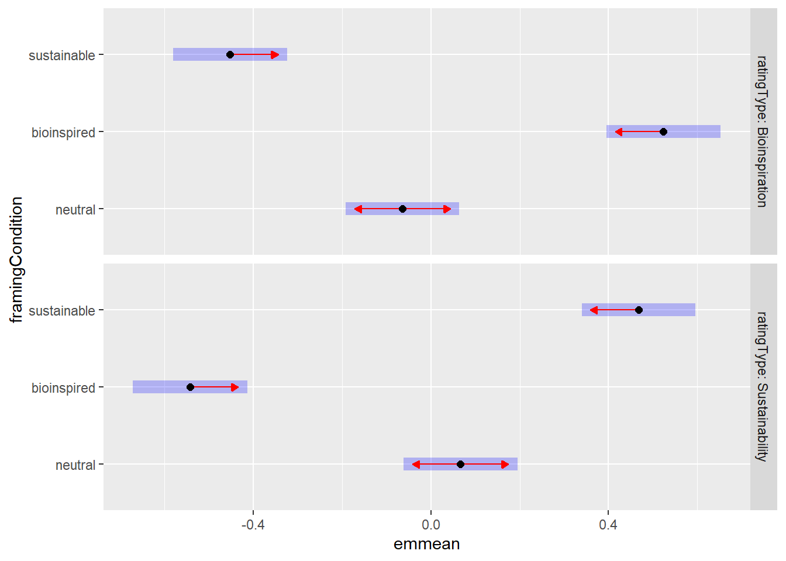
# Estimated marginal means for each cell
emm <- emmeans(model_scaled, ~ framingCondition * ratingType)
emm framingCondition ratingType emmean SE df lower.CL upper.CL
neutral Bioinspiration -0.0637 0.0652 1170 -0.192 0.0641
bioinspired Bioinspiration 0.5237 0.0657 1170 0.395 0.6525
sustainable Bioinspiration -0.4520 0.0652 1170 -0.580 -0.3241
neutral Sustainability 0.0669 0.0652 1170 -0.061 0.1947
bioinspired Sustainability -0.5425 0.0657 1170 -0.671 -0.4136
sustainable Sustainability 0.4673 0.0652 1170 0.339 0.5952
Confidence level used: 0.95 # Simple effects of ratingType within each level of framingCondition
simple_rating_by_frame <- contrast(
emm,
method = "pairwise",
by = "framingCondition",
adjust = "none" # or "bonferroni", "holm", etc. if you like
)
summary(simple_rating_by_frame)framingCondition = neutral:
contrast estimate SE df t.ratio p.value
Bioinspiration - Sustainability -0.131 0.0922 1170 -1.417 0.1567
framingCondition = bioinspired:
contrast estimate SE df t.ratio p.value
Bioinspiration - Sustainability 1.066 0.0929 1170 11.480 <.0001
framingCondition = sustainable:
contrast estimate SE df t.ratio p.value
Bioinspiration - Sustainability -0.919 0.0922 1170 -9.976 <.0001# Simple effects of framingCondition within each level of ratingType
simple_frame_by_rating <- contrast(
emm,
method = "pairwise",
by = "ratingType",
adjust = "none"
)
summary(simple_frame_by_rating)ratingType = Bioinspiration:
contrast estimate SE df t.ratio p.value
neutral - bioinspired -0.587 0.0925 1170 -6.350 <.0001
neutral - sustainable 0.388 0.0922 1170 4.213 <.0001
bioinspired - sustainable 0.976 0.0925 1170 10.546 <.0001
ratingType = Sustainability:
contrast estimate SE df t.ratio p.value
neutral - bioinspired 0.609 0.0925 1170 6.586 <.0001
neutral - sustainable -0.400 0.0922 1170 -4.346 <.0001
bioinspired - sustainable -1.010 0.0925 1170 -10.915 <.0001all_contrasts <- contrast(emm, method = "pairwise", adjust = "none")
summary(all_contrasts) contrast estimate SE df
neutral Bioinspiration - bioinspired Bioinspiration -0.5874 0.0925 1170
neutral Bioinspiration - sustainable Bioinspiration 0.3882 0.0922 1170
neutral Bioinspiration - neutral Sustainability -0.1306 0.0922 1170
neutral Bioinspiration - bioinspired Sustainability 0.4787 0.0925 1170
neutral Bioinspiration - sustainable Sustainability -0.5311 0.0922 1170
bioinspired Bioinspiration - sustainable Bioinspiration 0.9757 0.0925 1170
bioinspired Bioinspiration - neutral Sustainability 0.4568 0.0925 1170
bioinspired Bioinspiration - bioinspired Sustainability 1.0662 0.0929 1170
bioinspired Bioinspiration - sustainable Sustainability 0.0563 0.0925 1170
sustainable Bioinspiration - neutral Sustainability -0.5188 0.0922 1170
sustainable Bioinspiration - bioinspired Sustainability 0.0905 0.0925 1170
sustainable Bioinspiration - sustainable Sustainability -0.9193 0.0922 1170
neutral Sustainability - bioinspired Sustainability 0.6093 0.0925 1170
neutral Sustainability - sustainable Sustainability -0.4005 0.0922 1170
bioinspired Sustainability - sustainable Sustainability -1.0098 0.0925 1170
t.ratio p.value
-6.350 <.0001
4.213 <.0001
-1.417 0.1567
5.175 <.0001
-5.763 <.0001
10.546 <.0001
4.938 <.0001
11.480 <.0001
0.609 0.5427
-5.630 <.0001
0.978 0.3282
-9.976 <.0001
6.586 <.0001
-4.346 <.0001
-10.915 <.0001plot(emm, comparisons = TRUE, by = "framingCondition")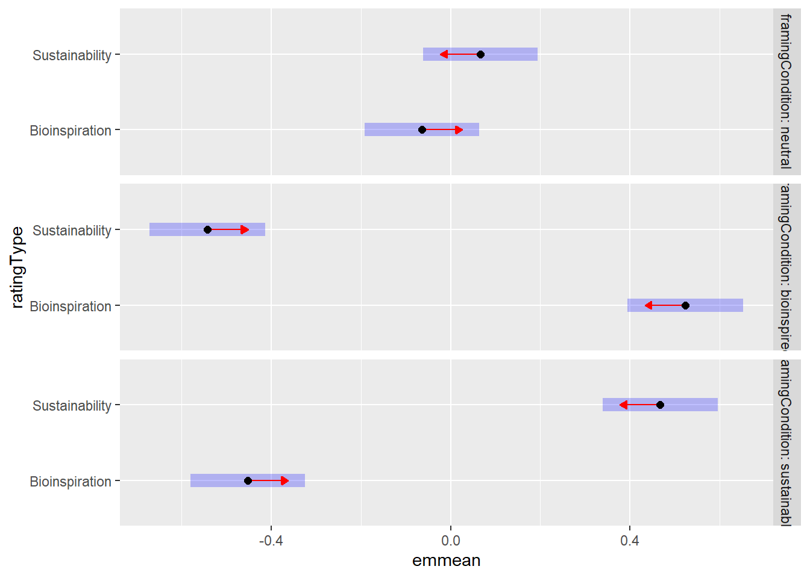
plot(emm, comparisons = TRUE, by = "ratingType")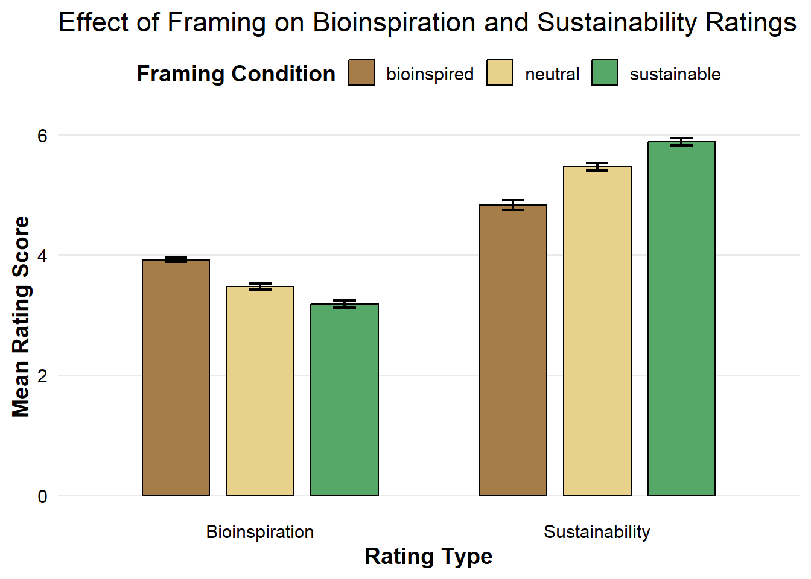
8.4 investigate if order of scales shown has an influence (in neutral)
table(dat$framingCondition, dat$whichItemsFirst)
bioinspired sustainable
bioinspired 194 0
neutral 96 101
sustainable 0 197dat <- dat %>%
mutate(framingCondition_neutral = case_when(
framingCondition == "bioinspired" & whichItemsFirst == "bioinspired" ~ "bioinspired",
framingCondition == "sustainable" & whichItemsFirst == "sustainable" ~ "sustainable",
framingCondition == "neutral" & whichItemsFirst == "sustainable" ~ "neut_sustainable",
framingCondition == "neutral" & whichItemsFirst == "bioinspired" ~ "neut_bioinspired"
))
table(dat$framingCondition_neutral)
bioinspired neut_bioinspired neut_sustainable sustainable
194 96 101 197 ggplot(dat, aes(x = framingCondition_neutral, y = mean_Bioinspiration)) +
geom_boxplot(fill = "skyblue") +
labs(title = "Bioinspiration by Framing", y = "Mean Score") +
theme_minimal()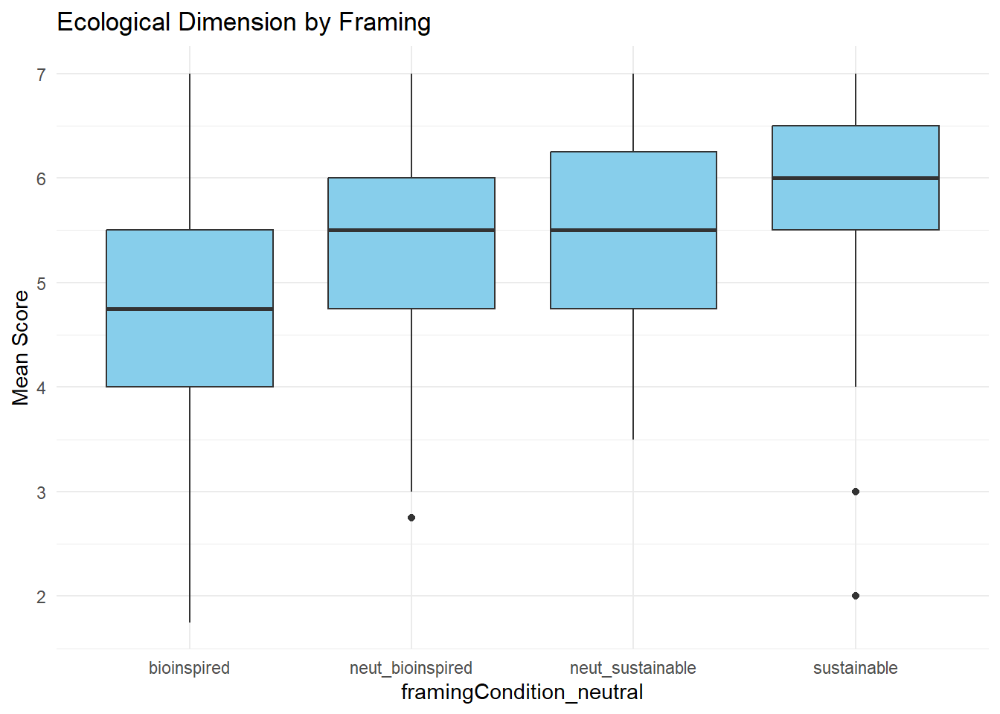
ggplot(dat, aes(x = framingCondition_neutral, y = mean_Bioinspiration_PN)) +
geom_boxplot(fill = "skyblue") +
labs(title = "Bioinspiration by Framing", y = "Mean Score PN") +
theme_minimal()
ggplot(dat, aes(x = framingCondition_neutral, y = mean_Bioinspiration_IPI)) +
geom_boxplot(fill = "skyblue") +
labs(title = "Bioinspiration by Framing", y = "Mean Score IPI") +
theme_minimal()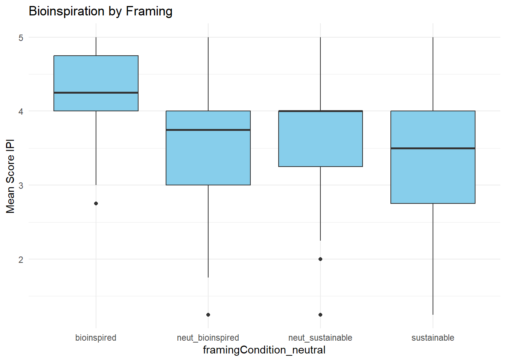
ggplot(dat, aes(x = framingCondition_neutral, y = mean_Bioinspiration_VRtN)) +
geom_boxplot(fill = "skyblue") +
labs(title = "Bioinspiration by Framing", y = "Mean Score VRtN") +
theme_minimal()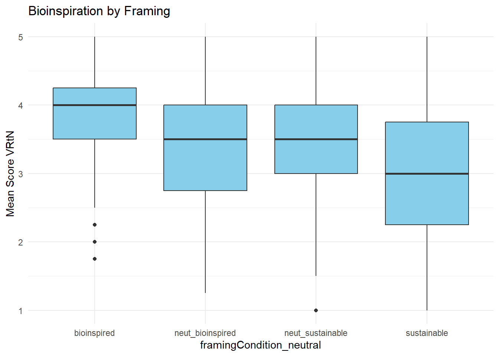
ggplot(dat, aes(x = framingCondition_neutral, y = mean_Ecological)) +
geom_boxplot(fill = "skyblue") +
labs(title = "Ecological Dimension by Framing", y = "Mean Score") +
theme_minimal()
ANOVAs + post hoc tests:
# --- ANOVA for Bioinspiration ---
aov_bio <- aov_ez(
id = "PROLIFIC_PID", # replace with your participant ID column name
dv = "mean_Bioinspiration",
data = dat,
between = "framingCondition_neutral"
)
print(aov_bio)Anova Table (Type 3 tests)
Response: mean_Bioinspiration
Effect df MSE F ges p.value
1 framingCondition_neutral 3, 584 0.47 38.25 *** .164 <.001
---
Signif. codes: 0 '***' 0.001 '**' 0.01 '*' 0.05 '+' 0.1 ' ' 1# Post hoc (Tukey) for Bioinspiration
em_bio <- emmeans(aov_bio, "framingCondition_neutral")
bio_posthoc <- pairs(em_bio, adjust = "tukey")
print(bio_posthoc) contrast estimate SE df t.ratio p.value
bioinspired - neut_bioinspired 0.522 0.0859 584 6.072 <.0001
bioinspired - neut_sustainable 0.365 0.0845 584 4.319 0.0001
bioinspired - sustainable 0.733 0.0696 584 10.524 <.0001
neut_bioinspired - neut_sustainable -0.157 0.0981 584 -1.598 0.3806
neut_bioinspired - sustainable 0.211 0.0857 584 2.465 0.0666
neut_sustainable - sustainable 0.368 0.0843 584 4.368 0.0001
P value adjustment: tukey method for comparing a family of 4 estimates # --- ANOVA for Ecological Dimension ---
aov_eco <- aov_ez(
id = "PROLIFIC_PID", # replace with your participant ID column name
dv = "mean_Ecological",
data = dat,
between = "framingCondition_neutral"
)
print(aov_eco)Anova Table (Type 3 tests)
Response: mean_Ecological
Effect df MSE F ges p.value
1 framingCondition_neutral 3, 584 0.91 41.67 *** .176 <.001
---
Signif. codes: 0 '***' 0.001 '**' 0.01 '*' 0.05 '+' 0.1 ' ' 1# Post hoc (Tukey) for Ecological
em_eco <- emmeans(aov_eco, "framingCondition_neutral")
eco_posthoc <- pairs(em_eco, adjust = "tukey")
print(eco_posthoc) contrast estimate SE df t.ratio p.value
bioinspired - neut_bioinspired -0.516 0.1190 584 -4.350 0.0001
bioinspired - neut_sustainable -0.752 0.1170 584 -6.440 <.0001
bioinspired - sustainable -1.056 0.0962 584 -10.972 <.0001
neut_bioinspired - neut_sustainable -0.235 0.1360 584 -1.736 0.3059
neut_bioinspired - sustainable -0.539 0.1180 584 -4.556 <.0001
neut_sustainable - sustainable -0.304 0.1160 584 -2.611 0.0456
P value adjustment: tukey method for comparing a family of 4 estimates 9 Heterogeneity
9.1 latent class analysis for mean items
manifest correlations:
psych::cor.plot(r = cor(dat[, str_detect(string = colnames(dat),
pattern = "^mean_")]
, use = "pairwise.complete.obs"),
upper = FALSE, xlas = 2, main = "Overall")
hist(dat$mean_Bioinspiration)
hist(dat$mean_Bioinspiration_PN)
hist(dat$mean_Bioinspiration_IPI)
hist(dat$mean_Bioinspiration_VRtN)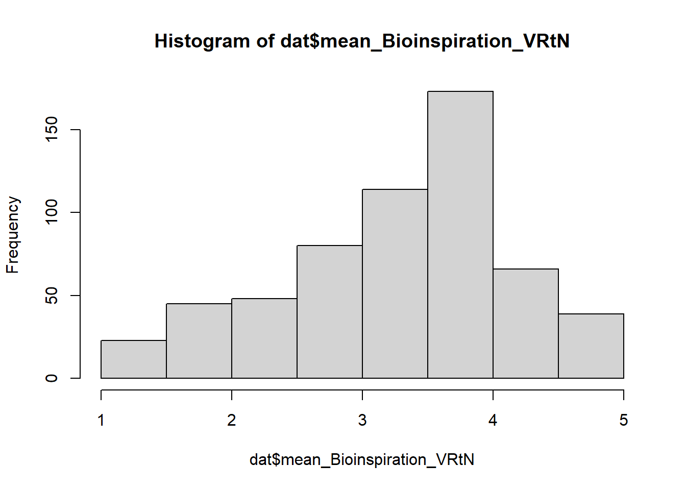
hist(dat$mean_Ecological)
colnames(dat) [1] "ID" "meta.userAgent"
[3] "meta.platform" "meta.language"
[5] "meta.locale" "meta.timeZone"
[7] "meta.timezoneOffset" "meta.screen_width"
[9] "meta.screen_height" "meta.scroll_width"
[11] "meta.scroll_height" "meta.window_innerWidth"
[13] "meta.window_innerHeight" "meta.devicePixelRatio"
[15] "PROLIFIC_PID" "framingCondition"
[17] "sociodemo_gender" "sociodemo_priorExperience"
[19] "sociodemo_residency" "feedback_critic"
[21] "EcologicalDimension-1" "EcologicalDimension-4"
[23] "EcologicalDimension-2" "EcologicalDimension-3"
[25] "Bioinspiration-PN1" "Bioinspiration-IPI4"
[27] "Bioinspiration-VRtN4r" "Bioinspiration-VRtN2"
[29] "Bioinspiration-IPI1" "Bioinspiration-VRtN1"
[31] "Bioinspiration-IPI3" "Bioinspiration-VRtN3"
[33] "Bioinspiration-PN3" "Bioinspiration-IPI2r"
[35] "Bioinspiration-PN4" "dummy_informedconsent"
[37] "commCheck" "feedback_conscientiousCompletion"
[39] "sociodemo_age" "whichItemsFirst"
[41] "socio_age" "socio_sex"
[43] "socio_ethnicity" "socio_student"
[45] "socio_employment" "total_min_prolific"
[47] "flagDelete" "mean_Bioinspiration"
[49] "mean_Bioinspiration_PN" "mean_Bioinspiration_IPI"
[51] "mean_Bioinspiration_VRtN" "mean_Ecological"
[53] "framingCondition_neutral" nrow(dat)[1] 588length(unique(dat$ID))[1] 588length(unique(dat$PROLIFIC_PID))[1] 588setwd("outputs/LCA_means")
if(runMplusLCA){
LCA_dat <- dat[, c("ID", "mean_Ecological", "mean_Bioinspiration_PN", "mean_Bioinspiration_IPI", "mean_Bioinspiration_VRtN")]
tmp <- str_subset(string = colnames(LCA_dat), pattern = "^mean_")
tmp <- str_remove_all(string = tmp, pattern = "^mean_")
tmp <- str_remove_all(string = tmp, pattern = "inspiration|logical")
# cat(paste0(tmp, "(", 1:length(tmp), ")"))
# cat(paste0(tmp))
colnames(LCA_dat) <- c("ID", tmp)
# prepareMplusData(df = LCA_dat, filename = "LCA_dat.dat")
l = 1
list_lca_means <- list()
for(i in 2:LCArunsDef){
print(i)
numClasses <- i
LCA_mplus <- mplusObject(
TITLE = paste0("Latent Class Analysis Mean Scales", " c=", numClasses),
VARIABLE =paste0("
usevariables = Eco Bio_PN Bio_IPI Bio_VRtN;
classes = c(", numClasses, ")"),
ANALYSIS =
"
Type=mixture; ! LCA analysis
STARTS= 500 100;
!LRTstarts=0 0 300 20;
",
PLOT =
"
type = plot3;
series is Eco(1) Bio_PN(2) Bio_IPI(3) Bio_VRtN(4);
",
SAVEDATA = paste0("file = lca_", numClasses, ".txt ;
save = cprob;
format = free;
"),
OUTPUT = "tech11 tech14;", rdata = LCA_dat)
list_lca_means[[l]] <- mplusModeler(LCA_mplus,
modelout = paste0("lca_means", numClasses, ".inp"),
run = 1L)
l = l + 1
}
# comment out to avoid overwriting LCA outputs
saveRDS(list_lca_means, file="list_lca_means.rds")
}else{
list_lca_means <- readRDS("list_lca_means.rds" )
}getLCAfitstatistics(listMplusOutput = list_lca_means)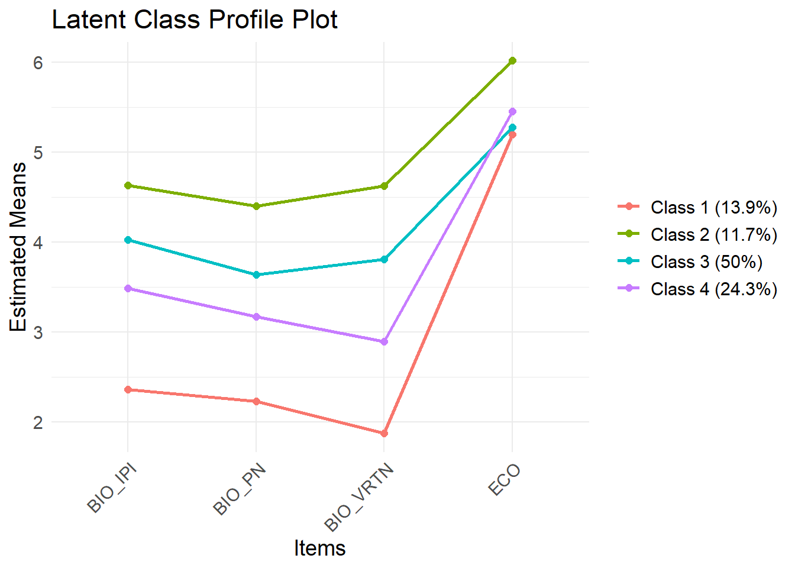
Classes LL AIC BIC SABIC CAIC BLRTp VLMRLRTp Entropy
1 2 -2728.041 5482.082 5538.980 5497.709 5551.979 0 0.0000 0.896
2 3 -2630.559 5297.118 5375.899 5318.756 5393.899 0 0.0112 0.780
3 4 -2575.586 5197.171 5297.836 5224.819 5320.837 0 0.0025 0.822
4 5 -2529.247 5114.493 5237.041 5148.151 5265.042 0 0.0766 0.802
5 6 -2505.610 5077.220 5221.652 5116.889 5254.652 0 0.0388 0.789
6 7 -2481.697 5039.394 5205.710 5085.073 5243.710 0 0.0532 0.796
7 8 -2466.395 5018.791 5206.990 5070.480 5249.989 0 0.2486 0.800### number of classes
num_classes <- 3 # index - 1
# Step 1: Extract means
params <- list_lca_means[[num_classes]]$results$parameters$unstandardized
means_df <- params %>%
filter(paramHeader == "Means" & !grepl("^C#\\d$", param))
# Step 2: Get class proportions
class_counts <- table(list_lca_means[[num_classes]]$results$savedata$C)
total_n <- sum(class_counts)
class_props <- round(100 * class_counts / total_n, 1)
# Create descriptive labels
class_labels <- paste0("Class ", names(class_counts), " (", class_props, "%)")
# Map class numbers to labels
class_label_map <- setNames(class_labels, paste0("Class ", names(class_counts)))
# Step 3: Prepare data for plotting
means_long <- means_df %>%
mutate(Indicator = param,
Class = paste0("Class ", LatentClass)) %>%
select(Indicator, Class, est) %>%
pivot_wider(names_from = Class, values_from = est) %>%
pivot_longer(cols = starts_with("Class"), names_to = "Class", values_to = "Mean")
# Apply the new labels
means_long$Class <- class_label_map[means_long$Class]
# Optional: Set indicator order
means_long$Indicator <- factor(means_long$Indicator)
# means_long$Indicator <- factor(means_long$Indicator,
# levels = c("Eco", "Bio_PN", "Bio_IPI", "Bio_VRtN"))
# Step 4: Plot
ggplot(means_long, aes(x = Indicator, y = Mean, group = Class, color = Class)) +
geom_line(size = 1) +
geom_point(size = 2) +
theme_minimal() +
labs(title = "Latent Class Profile Plot",
x = "Items",
y = "Estimated Means") +
theme(text = element_text(size = 14),
axis.text.x = element_text(angle = 45, hjust = 1),
legend.title = element_blank())
class_counts
1 2 3 4
82 69 294 143 class_counts / nrow(dat)
1 2 3 4
0.1394558 0.1173469 0.5000000 0.2431973 we chose the 4 class solution as the best model
setwd("outputs/LCA_means")
dat_classes <- read.table(file = "lca_4_choosen.txt")
dat$lclasses_BioEco <- dat_classes$V9classes_tables <- table(dat$lclasses_BioEco, dat$framingCondition)
classes_tables
bioinspired neutral sustainable
1 4 29 49
2 38 17 14
3 121 106 67
4 31 45 67chi <- chisq.test(classes_tables, correct = FALSE)
chi_stat <- chi$statistic
chi
Pearson's Chi-squared test
data: classes_tables
X-squared = 81.924, df = 6, p-value = 1.43e-15# Cramer's V
n <- sum(classes_tables)
k <- min(nrow(classes_tables), ncol(classes_tables))
cramers_v <- sqrt(chi_stat / (n * (k - 1)))
cramers_vX-squared
0.263938 # Extract standardized residuals
std_res <- chi$stdres
round(std_res, 2) # rounded for readability
bioinspired neutral sustainable
1 -5.84 0.39 5.43
2 4.15 -1.66 -2.48
3 4.21 1.31 -5.50
4 -3.31 -0.59 3.89# See which cells are "large" (e.g., |residual| > 2)
which(abs(std_res) > 2, arr.ind = TRUE) row col
1 1 1
2 2 1
3 3 1
4 4 1
1 1 3
2 2 3
3 3 3
4 4 3# A heatmap of standardized residuals with ggplot2
res_df <- as.data.frame(as.table(std_res))
colnames(res_df) <- c("lclasses_BioEco", "framingCondition", "stdres")
ggplot(res_df, aes(x = framingCondition,
y = lclasses_BioEco,
fill = stdres)) +
geom_tile() +
geom_text(aes(label = round(stdres, 2))) +
scale_fill_gradient2(
low = "blue",
mid = "white",
high = "red",
midpoint = 0
) +
labs(
title = "Standardized residuals: lclasses_BioEco × framingCondition",
x = "Framing condition",
y = "lclasses_BioEco",
fill = "Std. resid"
) +
theme_minimal()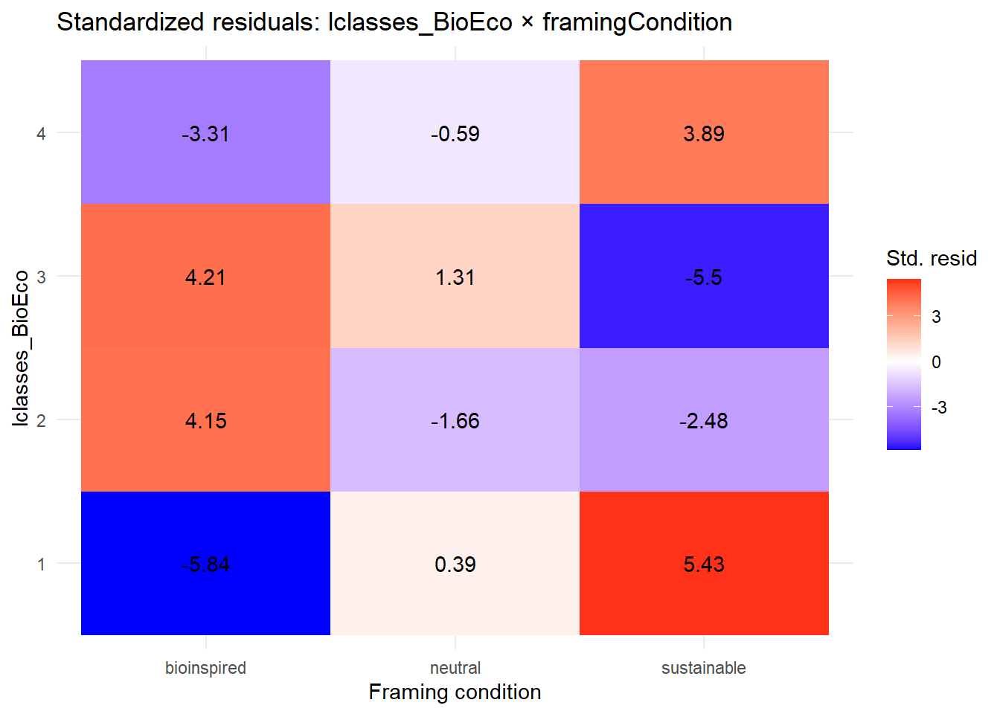